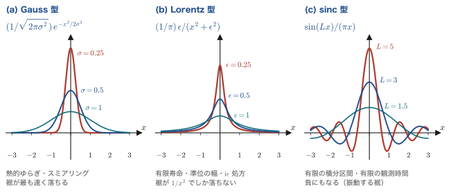
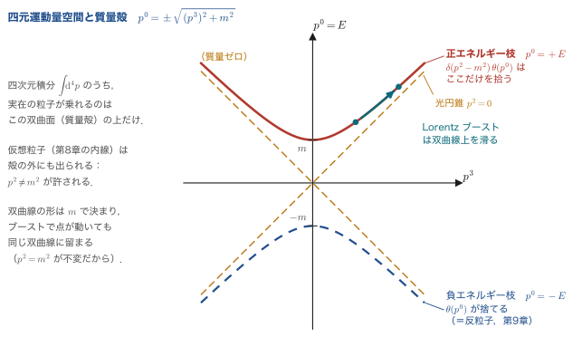
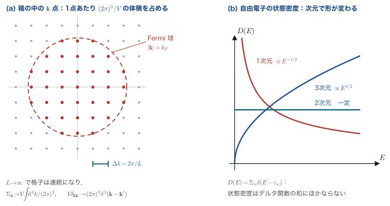
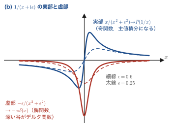
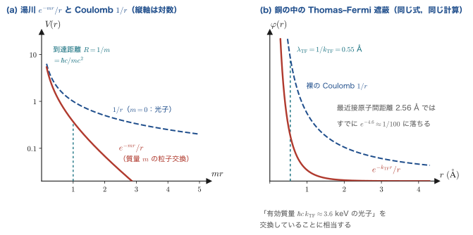

付録ADirac のデルタ関数と規格化
本書の第8章以降，ほとんどすべての計算の途中に $\delta$ が現れる．散乱振幅を書き下せば $(2\pi)^4\delta^4(p_A+p_B-\sum p_f)$ が出てくるし，伝播関数の分母には $+\ii\epsilon$ が付いていて，その $\epsilon$ をゼロにする操作が $\delta$ を産む．状態の規格化 $\braket{p|p'}=2E_p(2\pi)^3\delta^3(\pp-\pp')$ には，なぜか $2E$ という因子が居座っている．これらは「計算の細部」として飛ばされることが多いが，飛ばした人は必ず後で困る．因子 $2$ を一つ落とせば断面積が $4$ 倍ずれ，$(2\pi)^3$ を一つ落とせば値が約 $250$ 倍（正確には $(2\pi)^3=248.05$ 倍）ずれるからである．
本付録の目的は二つある．第一に，$\delta$ 関数の道具箱を，証明つきで一式そろえること．第二に，本書で使う規約を一箇所に固定することである．Fourier 変換の $2\pi$ をどちらに置くか，位相空間要素に $2E$ を入れるか入れないか——これらは物理ではなく約束事だが，約束を明文化しておかないと，別の教科書の式と自分の式を並べたときに何が違うのか分からなくなる．A.3 節と A.5 節に置いた規約表は，本書のどの章からも参照される．
そして本付録には，もう一つ隠れた狙いがある．ここに並ぶ道具は，素粒子物理だけのものではない．$\delta$ 関数の和は状態密度そのものであり，Lorentz 型表現の幅 $\eta$ は第一原理計算のスミアリング幅そのものであり，Sokhotski–Plemelj の公式はKramers–Kronig 関係を導く鍵であり，A.6 節で完全に計算する $1/(q^2+m^2)$ の Fourier 変換は，湯川ポテンシャルとThomas–Fermi 遮蔽を一行で結んでしまう．湯川が中間子に与えた質量 $m$ と，金属中の Thomas–Fermi 波数 $k_\mathrm{TF}$ は，同じ積分の同じ場所に入る同じ記号である．これは比喩ではなく，文字どおり同じ式である．
そこで本付録では，各節の道具を導いた直後に，それが材料科学のどこに顔を出すかを式で示す．$\delta$ 関数は，素粒子物理学と物性物理学が共有している最も基本的な言語である．
- $\delta$ 関数の定義（汎関数としての定義）と，スケーリング則 $\delta(ax)=\delta(x)/\abs{a}$，合成関数則 $\delta(f(x))=\sum_i\delta(x-x_i)/\abs{f'(x_i)}$ の証明
- Gauss 型・Lorentz 型・sinc 型の三つの表現と，それぞれがどの物理場面で自然に現れるか
- $\left[2\pi\delta(E)\right]^2=2\pi T\,\delta(E)$ という「二乗の処方」——崩壊率と Fermi の黄金律の出所（付録Bで使う）
- $\delta^3$，$\delta^4$，$\nabla^2(1/r)=-4\pi\delta^3(\xx)$，質量殻条件 $\delta(p^2-m^2)\theta(p^0)$
- 本書の Fourier 変換規約，箱規格化 $\sum_\kk\to V\!\int\!\dd^3k/(2\pi)^3$ と状態密度 $D(E)=\sum_n\delta(E-\varepsilon_n)$
- 主値積分と Sokhotski–Plemelj 公式 $\dfrac{1}{x\pm\ii\epsilon}=\PV\dfrac{1}{x}\mp\ii\pi\delta(x)$，および Feynman の $\ii\epsilon$ 処方との関係
- 相対論的規格化に $2E$ が現れる理由（$E\,\delta^3(\pp-\pp')$ が Lorentz 不変であることの直接証明）と，不変位相空間要素 $\dd^3p/[(2\pi)^3 2E]$
- $1/(\qq^2+m^2)$ の三次元 Fourier 変換が $\ee^{-mr}/(4\pi r)$ になることの完全な計算（第8章の湯川ポテンシャル）
- 材料科学との接点：状態密度とスミアリング，遅延 Green 関数と Kramers–Kronig，Thomas–Fermi 遮蔽，Ewald 和
- Gauss 積分・Feynman パラメータ・Euler の Beta 関数・次元正則化の基本積分の公式集
A.1 1次元のデルタ関数
A.1.1 「関数」ではなく「積分の中でだけ意味をもつ記号」である
Dirac は 1927 年の論文で次の性質をもつ量 $\delta(x)$ を導入し，1930 年の教科書『The Principles of Quantum Mechanics』でそれを体系化した：$x\neq0$ でゼロ，$x=0$ で無限大，しかも全積分が $1$．これを普通の関数として読むと矛盾する．ある一点を除いてゼロの関数は，Lebesgue の意味で積分すればゼロだからである．したがって $\delta$ は関数ではない．正しくは，関数を数に写す写像（汎関数）として定義しなければならない．
定義：Dirac のデルタ関数
$\delta(x)$ とは，任意の連続関数 $f(x)$ に対して次を満たす記号である．
すなわち $\delta(x-a)$ は「$f$ を受け取って $f(a)$ を返す装置」である．$\delta$ 単独では意味をもたず，必ず積分記号の中にあってはじめて意味をもつ．特に $f(x)=1$ とおけば $\int\delta(x-a)\dd x=1$ が従う．
数学では，$\delta$ は超関数（distribution，Schwartz の意味での緩増加超関数）と呼ばれる対象であり，急減少関数の空間 $\mathcal{S}$ 上の連続線形汎関数として厳密に定義される．物理では，式 \eqref{eq:A-def} を「使い方の規則」として受け入れれば十分である．
注意：$\delta(x)^2$ は意味をもたない
超関数は掛け算ができない．$\delta(x)\cdot\delta(x)$ には意味がなく，$\int f(x)\delta(x)^2\dd x$ という式は数学的に無定義である．ところが第8章以降の計算では，散乱振幅を二乗するときに $\left[(2\pi)^4\delta^4(\cdots)\right]^2$ という形が必ず現れる．これをどう処理するかが A.1.4 項の主題であり，答えは「一方の $\delta$ を有限の時空体積 $VT$ で置き換える」である．無定義な量が最終的に有限の物理量（崩壊率・断面積）を与える仕掛けを，そこで丁寧に見る．
一方，$\delta(x)f(x)$ のように滑らかな関数を掛けるのは問題ない．$x\,\delta(x)=0$，$f(x)\delta(x-a)=f(a)\delta(x-a)$ はいずれも正しい等式である（両辺を任意の試験関数と積分すれば一致する）．
A.1.2 基本性質とその証明
以下，$f$ は十分滑らかで，積分は $-\infty$ から $\infty$ までとする．証明はすべて「両辺を試験関数と積分して一致することを示す」という一つの方針で片づく．
導出1：偶関数性 $\delta(-x)=\delta(x)$
ステップ1：左辺を試験関数と積分する．
$$ \int_{-\infty}^{\infty} f(x)\,\delta(-x)\,\dd x $$ステップ2：変数変換 $y=-x$ を行う．$\dd x=-\dd y$ であり，積分区間は $x:-\infty\to\infty$ が $y:\infty\to-\infty$ に移る．上下限の入れ替えで符号がもう一つ出て，二つの負号が打ち消す．
$$ = \int_{\infty}^{-\infty} f(-y)\,\delta(y)\,(-\dd y) = \int_{-\infty}^{\infty} f(-y)\,\delta(y)\,\dd y = f(0) $$ステップ3：右辺と比べる．$\int f(x)\delta(x)\dd x=f(0)$ であるから両者は一致し，任意の $f$ について成り立つので $\delta(-x)=\delta(x)$ である．$\blacksquare$
導出2：スケーリング則 $\delta(ax)=\dfrac{1}{\abs{a}}\delta(x)$（$a\neq0$）
ステップ1：$a>0$ の場合．$y=ax$ とおくと $\dd x=\dd y/a$ であり，区間の向きは変わらない．
$$ \int_{-\infty}^{\infty} f(x)\,\delta(ax)\,\dd x = \int_{-\infty}^{\infty} f\!\left(\frac{y}{a}\right)\delta(y)\,\frac{\dd y}{a} = \frac{1}{a}f(0) $$ステップ2：$a<0$ の場合．同じ変換をすると $\dd x=\dd y/a$ の $a$ が負なので，区間の向きが反転する．$x:-\infty\to\infty$ は $y:\infty\to-\infty$ に移り，上下限を戻すときに負号が出る．
$$ = \int_{\infty}^{-\infty} f\!\left(\frac{y}{a}\right)\delta(y)\,\frac{\dd y}{a} = -\frac{1}{a}f(0) = \frac{1}{\abs{a}}f(0) $$ステップ3：まとめる．どちらの場合も結果は $f(0)/\abs{a}$ であるから，
である．$\blacksquare$ この式は「$\delta$ は長さの逆数の次元をもつ」ことを言っている．$\delta(x)$ の次元は $[x]^{-1}$，$\delta^3(\xx)$ の次元は $[L]^{-3}$（$L$ は長さ），$\delta^4(p)$ の次元は $[E]^{-4}$（$E$ はエネルギー）である．次元解析で式の正しさを確かめるときに必ず使う．
導出3：合成関数則 $\delta(f(x))=\displaystyle\sum_i \frac{\delta(x-x_i)}{\abs{f'(x_i)}}$
ここで $x_i$ は $f(x_i)=0$ を満たす単純零点（$f'(x_i)\neq0$）のすべてである．
ステップ1：零点の近傍に分割する．$\delta(f(x))$ は $f(x)=0$ となる点の近くでしか値をもたない．そこで積分を，各零点 $x_i$ を含む小区間 $I_i=(x_i-\eta,\;x_i+\eta)$ の和に分ける．$\eta$ は零点どうしが混ざらないほど小さくとる．
$$ \int g(x)\,\delta(f(x))\,\dd x = \sum_i \int_{I_i} g(x)\,\delta(f(x))\,\dd x $$ステップ2：各区間で $u=f(x)$ と変数変換する．$f'(x_i)\neq0$ なので $I_i$ 上で $f$ は単調であり，逆関数 $x=f^{-1}(u)$ が一意に定まる．$\dd u=f'(x)\dd x$ より $\dd x=\dd u/f'(x)$．$f'(x_i)<0$ のときは区間の向きが反転するが，それを絶対値に吸収すれば（導出2 と同じ操作である）
$$ \int_{I_i} g(x)\,\delta(f(x))\,\dd x = \int_{f(I_i)} g\big(f^{-1}(u)\big)\,\delta(u)\,\frac{\dd u}{\abs{f'(f^{-1}(u))}} $$である．積分範囲 $f(I_i)$ は $f(x_i-\eta)$ から $f(x_i+\eta)$ までの，$u=0$ を内点に含む小区間である（$\eta$ が小さければ幅はおよそ $2\eta\abs{f'(x_i)}$ だが，$\delta(u)$ は $u=0$ の近傍しか見ないので，端点は結果に影響しない）．
ステップ3：$\delta(u)$ を使う．$u=0$ で $f^{-1}(0)=x_i$ であるから
$$ = \frac{g(x_i)}{\abs{f'(x_i)}} $$ステップ4：足し合わせる．
$\blacksquare$ 式 \eqref{eq:A-scale} は $f(x)=ax$ の特別な場合である．A.2 節で質量殻条件 $\delta(p^2-m^2)$ を扱うとき，この公式が主役になる．
例A.1：合成関数則の練習
(a) $\delta(x^2-a^2)$（$a>0$）．零点は $x=\pm a$，$f'(x)=2x$ より $\abs{f'(\pm a)}=2a$．よって
$$ \delta(x^2-a^2) = \frac{1}{2a}\Big[\delta(x-a)+\delta(x+a)\Big] $$(b) $\delta(\sin x)$．零点は $x=n\pi$（$n\in\mathbb{Z}$），$f'(x)=\cos x$ より $\abs{\cos n\pi}=1$．よって
$$ \delta(\sin x) = \sum_{n=-\infty}^{\infty}\delta(x-n\pi) $$(c) $\delta(\ee^{x}-1)$．零点は $x=0$ のみ，$f'(0)=1$ なので $\delta(\ee^x-1)=\delta(x)$．
(d) 重根には使えない．$\delta(x^2)$ は $f'(0)=0$ なので式 \eqref{eq:A-composite} が破綻し，実際 $\delta(x^2)$ は定義されない．
微分についても規則がある．$\delta'(x)$ は，部分積分を「定義」として採用することで意味づけられる．
導出4：デルタ関数の微分
ステップ1：部分積分する．$\delta$ は無限遠でゼロ（試験関数も無限遠で急減少）とみなして境界項を捨てる．
$$ \int_{-\infty}^{\infty} f(x)\,\delta'(x-a)\,\dd x = \Big[f(x)\delta(x-a)\Big]_{-\infty}^{\infty} - \int_{-\infty}^{\infty} f'(x)\,\delta(x-a)\,\dd x $$ステップ2：境界項を落として第二項を評価する．
ステップ3：派生公式．式 \eqref{eq:A-deriv} で $f(x)=x g(x)$ とおくと，$n=1$ の場合に $-\left[xg(x)\right]'\big|_{0}=-g(0)$ となるから
$$ x\,\delta'(x) = -\delta(x) $$が従う．同様に $x\,\delta(x)=0$，$x^2\delta'(x)=0$ である．$\blacksquare$
もう一つ，本書で頻繁に使う関係を挙げておく．Heaviside の階段関数
$$ \theta(x) = \begin{cases} 1 & (x>0)\\ 0 & (x<0)\end{cases} $$について，$\theta$ の微分は $\delta$ である：
$$ \begin{equation} \frac{\dd\theta(x)}{\dd x} = \delta(x) \label{eq:A-theta} \end{equation} $$証明は部分積分一発である．$\int f\theta'\dd x=[f\theta]-\int f'\theta\,\dd x=-\int_0^\infty f'\dd x=f(0)$．因果律を表す $\theta(t-t')$ が式のあちこちに現れるのは，遅延 Green 関数（第8章の伝播関数，および『線形応答理論入門』第1章）が本質的にこの構造をもつからである．
A.1.3 三つの表現
$\delta$ は，パラメータをもつ普通の関数列の極限として表せる．どの表現を選ぶかは物理の場面によって決まる．
定理：デルタ関数の三つの標準表現
次の三つはいずれも，$\int\delta_\lambda(x)\dd x=1$ を保ったまま幅がゼロに縮み，極限で $\delta(x)$ になる．
$$ \begin{equation} \delta(x) = \lim_{\sigma\to0^+}\frac{1}{\sqrt{2\pi}\,\sigma}\,\ee^{-x^2/2\sigma^2} \qquad\text{(Gauss 型)} \label{eq:A-gauss} \end{equation} $$ $$ \begin{equation} \delta(x) = \lim_{\epsilon\to0^+}\frac{1}{\pi}\,\frac{\epsilon}{x^2+\epsilon^2} \qquad\text{(Lorentz 型)} \label{eq:A-lorentz} \end{equation} $$ $$ \begin{equation} \delta(x) = \lim_{L\to\infty}\frac{\sin(Lx)}{\pi x} = \lim_{L\to\infty}\frac{1}{2\pi}\int_{-L}^{L}\ee^{\ii k x}\,\dd k \qquad\text{(sinc 型)} \label{eq:A-sinc} \end{equation} $$規格化はいずれも既知の積分から確かめられる．$\int\ee^{-x^2/2\sigma^2}\dd x=\sqrt{2\pi}\sigma$，$\int\dd x\,\epsilon/(x^2+\epsilon^2)=\left[\arctan(x/\epsilon)\right]_{-\infty}^{\infty}=\pi$，$\int_{-\infty}^{\infty}\frac{\sin u}{u}\dd u=\pi$．

物理的意味：どの表現を選ぶかは物理が決める
三つの表現は数学的には等価だが，物理的な出自がまったく違う．
- Gauss 型は，多数の独立な微小ゆらぎの重ね合わせ（中心極限定理）から出る．装置分解能，熱的な運動量分布，第一原理計算の Gauss スミアリングはこれである．
- Lorentz 型は，時間について $\ee^{-\Gamma t/2}$ で減衰する振幅の Fourier 変換から出る．不安定粒子の質量分布（Breit–Wigner，第8章 8.7.4 項・付録B B.4 節），原子準位の自然幅，Green 関数の $\ii\eta$ はすべてこれである．
- sinc 型は，有限区間での平面波の重ね合わせから出る．有限時間 $T$ の観測，有限体積 $V$ の箱，有限サイズの結晶による回折の Laue 関数はこれである．
「幅」の意味も違う．Gauss 型の $\sigma$ は分解能，Lorentz 型の $\epsilon$ は半値半幅 $\Gamma/2=1/(2\tau)$（$\Gamma=1/\tau$ が寿命の逆数），sinc 型の $1/L$ は観測時間や試料サイズの逆数である．同じ $\delta$ に収束するからといって，途中で幅を有限に残したときの物理的解釈は交換できない．
A.1.4 $\delta$ の二乗の処方：$[2\pi\delta(E)]^2 = 2\pi T\,\delta(E)$
散乱の確率は振幅の絶対値の二乗である．振幅にはエネルギー保存の $\delta$ が付いているので，二乗すると $\delta$ の二乗が現れる．これは A.1.1 項で述べたとおり無定義な量である．物理的に正しい処方は，最初から有限の時間 $T$ だけ相互作用を働かせておき，最後に $T\to\infty$ をとることである．
導出5：$\delta$ の二乗を時間 $T$ で置き換える
ステップ1：有限時間の $\delta$ を定義する．相互作用が $-T/2<t<T/2$ の間だけ働くとすると，時間積分から出るのは完全な $\delta$ ではなく
$$ \delta_T(E) \equiv \frac{1}{2\pi}\int_{-T/2}^{T/2}\ee^{\ii E t}\,\dd t = \frac{1}{2\pi}\cdot\frac{\ee^{\ii ET/2}-\ee^{-\ii ET/2}}{\ii E} = \frac{1}{\pi}\frac{\sin(ET/2)}{E} $$である．これは式 \eqref{eq:A-sinc} で $L=T/2$ とした sinc 型表現そのもので，$T\to\infty$ で $\delta(E)$ に収束する．
ステップ2：二乗する．
$$ \big[2\pi\,\delta_T(E)\big]^2 = \left(\frac{2\sin(ET/2)}{E}\right)^2 = \frac{4\sin^2(ET/2)}{E^2} $$ステップ3：これが $\delta$ の何倍かを，面積を計算して決める．$T\to\infty$ でこの関数は $E=0$ に鋭く集中する．そこで全積分を求める．公式 $\int_{-\infty}^{\infty}\frac{\sin^2(au)}{u^2}\dd u=\pi a$（$a>0$）を $a=T/2$，$u=E$ に使うと
$$ \int_{-\infty}^{\infty}\frac{4\sin^2(ET/2)}{E^2}\,\dd E = 4\cdot\pi\cdot\frac{T}{2} = 2\pi T $$ステップ4：結論．面積 $2\pi T$ をもち $E=0$ に集中する関数は $2\pi T\,\delta(E)$ に他ならない．すなわち
$\blacksquare$ 空間方向も同じ議論で，各方向について箱の長さ $L$ が出て，三次元では体積 $V=L^3$ が出る．
物理的意味：無限大は「単位時間あたり」で割り切る
式 \eqref{eq:A-delta-sq} の右辺には $T$（あるいは $VT$）が残る．遷移確率が観測時間に比例して増えるのは当然である．だから物理量として意味があるのは確率そのものではなく，単位時間・単位体積あたりの確率すなわち遷移率である．
$$ \text{遷移率} = \frac{\abs{\mathcal{M}}^2\,VT\,(2\pi)^4\delta^4(\textstyle\sum p)}{VT} = \abs{\mathcal{M}}^2\,(2\pi)^4\delta^4\big(\textstyle\sum p\big) $$$VT$ がきれいに落ちる．これが付録Bの崩壊率 $\Gamma$ と断面積 $\sigma$ の公式の骨格である．非相対論的な量子力学で習う Fermi の黄金律
$$ w_{i\to f} = 2\pi\abs{\bra{f}\hat{V}\ket{i}}^2\,\delta(E_f-E_i) $$も，まったく同じ導出（時間依存摂動論の一次で $\abs{\int_0^T\ee^{\ii\omega t}\dd t}^2$ を評価する）から出る．素粒子物理の断面積公式と，固体中の電子–フォノン散乱率や光吸収率の公式が同じ形をしているのは偶然ではない．どちらも式 \eqref{eq:A-delta-sq} を使っているのである．
A.2 3次元・4次元のデルタ関数
A.2.1 三次元のデルタ関数
三次元では，各成分ごとの $\delta$ の積として定義する．
定義：$\delta^3$ と一般座標での表式
$$ \begin{equation} \delta^3(\xx-\xx') \equiv \delta(x-x')\,\delta(y-y')\,\delta(z-z'), \qquad \int \dd^3x\; f(\xx)\,\delta^3(\xx-\xx') = f(\xx') \label{eq:A-delta3} \end{equation} $$直交座標以外では Jacobian に注意する．座標 $(u_1,u_2,u_3)$ で体積要素が $\dd^3x=J\,\dd u_1\dd u_2\dd u_3$ と書けるとき，式 \eqref{eq:A-delta3} の右辺を再現するには
$$ \delta^3(\xx-\xx') = \frac{1}{J}\,\delta(u_1-u_1')\,\delta(u_2-u_2')\,\delta(u_3-u_3') $$としなければならない．極座標 $J=r^2\sin\theta$ の場合は
$$ \begin{equation} \delta^3(\xx-\xx') = \frac{1}{r^2\sin\theta}\,\delta(r-r')\,\delta(\theta-\theta')\,\delta(\phi-\phi') = \frac{1}{r^2}\,\delta(r-r')\,\delta(\cos\theta-\cos\theta')\,\delta(\phi-\phi') \label{eq:A-delta3-polar} \end{equation} $$である（$\delta(\cos\theta-\cos\theta')=\delta(\theta-\theta')/\sin\theta$ を式 \eqref{eq:A-composite} から使った）．
次の関係は，本書で最も頻繁に使う $\delta^3$ の性質である．第8章の湯川ポテンシャル，第10章の Coulomb 場，A.6 節の Fourier 変換のすべてがこれに依拠する．
導出6：$\nabla^2\dfrac{1}{r} = -4\pi\,\delta^3(\xx)$
ステップ1：原点以外ではゼロであることを示す．$r=\abs{\xx}$ として，$\nabla r=\hat{\bm r}$ だから
$$ \nabla\frac{1}{r} = -\frac{1}{r^2}\hat{\bm r} $$である．極座標のラプラシアン $\nabla^2 g(r)=\frac{1}{r^2}\frac{\dd}{\dd r}\!\left(r^2\frac{\dd g}{\dd r}\right)$ を使うと，$r\neq0$ で
$$ \nabla^2\frac{1}{r} = \frac{1}{r^2}\frac{\dd}{\dd r}\left(r^2\cdot\left(-\frac{1}{r^2}\right)\right) = \frac{1}{r^2}\frac{\dd}{\dd r}(-1) = 0 $$すなわち原点を除いてゼロである．したがって右辺が $\delta^3$ に比例することは分かった．
ステップ2：比例係数を，原点を含む球で積分して決める．半径 $R$ の球 $B_R$ で積分し，Gauss の発散定理で表面積分に直す．
$$ \int_{B_R}\nabla^2\frac{1}{r}\,\dd^3x = \oint_{S_R}\left(\nabla\frac{1}{r}\right)\cdot\dd\bm{S} = \oint_{S_R}\left(-\frac{1}{R^2}\hat{\bm r}\right)\cdot\left(\hat{\bm r}\,R^2\,\dd\Omega\right) $$ステップ3：面積分を実行する．$\hat{\bm r}\cdot\hat{\bm r}=1$ で $R^2$ が約分し，残るのは立体角の積分だけである．
$$ = -\int \dd\Omega = -4\pi $$$R$ に依らない．すなわち原点にすべての重みが集中している．
ステップ4：結論．原点以外でゼロ，全積分が $-4\pi$ であるから
$\blacksquare$ 右の形は「$1/(4\pi r)$ は Laplace 演算子の Green 関数である」と読む．点電荷の Coulomb ポテンシャルが $1/r$ に比例するのは，この一行のためである．
A.2.2 四次元のデルタ関数と運動量保存
四元運動量 $p^\mu=(E,\pp)$ に対して
$$ \begin{equation} \delta^4(p) \equiv \delta(p^0)\,\delta^3(\pp) = \delta(E)\,\delta(p_x)\,\delta(p_y)\,\delta(p_z) \label{eq:A-delta4} \end{equation} $$と定義する．重要なのは$\delta^4$ が Lorentz 不変であることである．理由は簡単で，Lorentz 変換 $p'^\mu=\Lambda^\mu_{\ \nu}p^\nu$ の Jacobian は $\abs{\det\Lambda}=1$ であり（$\Lambda$ は $\det=+1$ の固有 Lorentz 変換），したがって $\dd^4p'=\dd^4p$ が成り立つ．式 \eqref{eq:A-scale} の四次元版により，$\dd^4p$ が不変なら $\delta^4(p)$ も不変である．一方 $\dd^3p$ は不変ではなく，$\delta^3(\pp)$ も不変ではない．この非対称性が A.5 節の $2E$ 因子を生む．
導出7：$(2\pi)^4\delta^4\!\left(\sum p\right)$ はどこから来るか
ステップ1：相互作用は時空の各点で起きる．第8章のファインマン則では，相互作用ハミルトニアン（あるいはラグランジアン密度）を全時空にわたって積分する．入射粒子を $\ee^{-\ii p\cdot x}$，射出粒子を $\ee^{+\ii p'\cdot x}$ で表すと，各頂点からは次の形の積分が出る．
$$ \int \dd^4x\;\ee^{-\ii(p_1+p_2+\cdots-p_1'-p_2'-\cdots)\cdot x} $$ここで $p\cdot x = Et-\pp\cdot\xx$ である（計量 $g^{\mu\nu}=\mathrm{diag}(1,-1,-1,-1)$）．
ステップ2：各成分ごとに sinc 型表現を使う．式 \eqref{eq:A-sinc} の第二の形 $\int_{-\infty}^{\infty}\dd t\,\ee^{\ii\omega t}=2\pi\delta(\omega)$ を四つの成分すべてに適用する．
$$ \int \dd^4x\;\ee^{-\ii q\cdot x} = (2\pi)^4\,\delta^4(q), \qquad q^\mu \equiv \sum_\text{in} p^\mu - \sum_\text{out} p^\mu $$$\delta^4$ は偶関数（$\delta^4(-q)=\delta^4(q)$）なので，指数の符号は結果に効かない．
ステップ3：意味を読む．したがってあらゆる散乱振幅には
という因子が付く．これはエネルギー・運動量保存則そのものである．$\blacksquare$
導出をたどれば分かるとおり，この因子が出た理由は「相互作用が時空のどの点でも同じ形をしている」ことだけである．すなわち時空並進不変性である．第5章で見た Noether の定理——連続対称性が保存則を生む——が，$\delta$ 関数という形で計算に直接埋め込まれているのである．
材料科学との接点：結晶では $\delta^3$ が「櫛」になる（Laue 条件）
導出7の論理を，連続並進不変性ではなく離散並進不変性に置き換えるとどうなるか．結晶は，格子ベクトル $\bm{R}$ だけの平行移動に対してのみ不変である．すると空間積分は，単位胞内の積分と格子点についての和に分かれる．
$$ \int_\text{crystal}\dd^3x\;\ee^{\ii\qq\cdot\xx} = \left(\int_\text{cell}\dd^3x\;\ee^{\ii\qq\cdot\xx}\right)\sum_{\bm R}\ee^{\ii\qq\cdot\bm R} $$この格子和は，Poisson の和公式によって $\delta$ 関数の櫛になる：
ここで $\bm{G}$ は逆格子ベクトル，$v_\text{cell}$ は単位胞の体積である．式 \eqref{eq:A-momcons} が「運動量は厳密に保存する」と言うのに対し，式 \eqref{eq:A-poisson} は「運動量は逆格子ベクトルを除いて保存する」と言っている．すなわち $\qq_\text{in}-\qq_\text{out}=\bm{G}$．
これは X 線回折の Laue 条件そのものであり，Bragg の法則 $2d\sin\theta=n\lambda$ の運動量空間での表現である．そしてフォノン–フォノン散乱における Umklapp 過程（$\bm{G}\neq0$ の項）が格子熱伝導率を有限にし（Peierls），電子–フォノン散乱の Umklapp 過程が金属の電気抵抗に効く理由でもある．素粒子物理では連続対称性なので $\bm{G}=0$ の項しかない．真空は「格子定数がゼロの結晶」ではなく，「並進が連続な結晶」なのである．
実際の回折実験では結晶が有限サイズ $N_1\times N_2\times N_3$ なので，式 \eqref{eq:A-poisson} の $\delta^3$ は完全な $\delta$ ではなく，図A.1(c) の sinc 型（正確にはその二乗，Laue 関数 $\sin^2(N q a/2)/\sin^2(qa/2)$）になる．回折ピークの幅から結晶子サイズを求める Scherrer の式は，この sinc の幅が $\propto 1/(Na)$ であることを使っているにすぎない．A.1.4 項の「有限の $T$ がピーク幅 $1/T$ を生む」というのと，まったく同じ数学である．
A.2.3 質量殻条件 $\delta(p^2-m^2)$
相対論的な粒子は $p^2=E^2-\abs{\pp}^2=m^2$ を満たす．四次元運動量空間の中でこの条件を満たす点の集合を質量殻（mass shell）と呼ぶ．$\delta(p^2-m^2)$ は「四次元空間の中で質量殻の上だけを拾う」測度である．合成関数則 \eqref{eq:A-composite} を使うと，これを $E$ についての $\delta$ に書き直せる．
導出8：$\delta(p^2-m^2)\,\theta(p^0) = \dfrac{1}{2E_p}\,\delta(p^0-E_p)$
ステップ1：$p^0$ の関数とみる．$\pp$ を固定して
$$ f(p^0) = p^2-m^2 = (p^0)^2 - \abs{\pp}^2 - m^2 = (p^0)^2 - E_p^2, \qquad E_p \equiv \sqrt{\abs{\pp}^2+m^2}\;(>0) $$ステップ2：零点と導関数を求める．零点は $p^0=\pm E_p$ の二つ．$f'(p^0)=2p^0$ だから $\abs{f'(\pm E_p)}=2E_p$．
ステップ3：式 \eqref{eq:A-composite} を適用する．
$$ \delta(p^2-m^2) = \frac{1}{2E_p}\Big[\delta(p^0-E_p) + \delta(p^0+E_p)\Big] $$ステップ4：正エネルギー枝だけを選ぶ．階段関数 $\theta(p^0)$ を掛けると第二項が消える．
ステップ5：四次元積分を三次元積分に落とす．両辺を $\dd^4p$ で積分すると，$p^0$ 積分が $\delta$ で片づいて
$\blacksquare$ 左辺は明らかに Lorentz 不変である（$\dd^4p$ が不変，$p^2-m^2$ がスカラー，$\theta(p^0)$ も固有・正時（proper orthochronous，$\det\Lambda=+1$ かつ $\Lambda^0{}_0\ge1$）な Lorentz 変換では時間の向きが保たれるので不変）．したがって右辺の $\dd^3p/2E_p$ も Lorentz 不変である．これが A.5 節で $2E$ が現れる根本の理由であり，本付録で最も重要な一行かもしれない．

注意：$\theta(p^0)$ を書き忘れない
$\delta(p^2-m^2)$ だけでは負エネルギー枝も拾ってしまう．第9章で見るように，負エネルギー解は反粒子として再解釈されるので捨てるわけにはいかないが，「終状態に出てくる実在の粒子」を数える位相空間積分では，粒子と反粒子は別々の四元運動量をもつ別々の外線として扱う．したがって各外線について $\theta(p^0)$ を課すのが正しい．文献によっては $\delta^+(p^2-m^2)\equiv\delta(p^2-m^2)\theta(p^0)$ という記号を使う．
A.3 Fourier 変換とデルタ関数
A.3.1 本書の規約
Fourier 変換の $2\pi$ をどこに置くかには何通りかの流儀がある．どれも物理的には同値だが，混ぜると必ず事故が起きる．本書では場の理論の標準（Peskin–Schroeder と同じ）を採用する．すなわち$2\pi$ はすべて運動量積分の側に付ける．
定義：本書の Fourier 変換規約
三次元：
四次元（$k\cdot x = k^0x^0-\kk\cdot\xx$）：
$$ \begin{equation} f(x) = \int\frac{\dd^4k}{(2\pi)^4}\;\tilde f(k)\,\ee^{-\ii k\cdot x}, \qquad \tilde f(k) = \int \dd^4x\; f(x)\,\ee^{+\ii k\cdot x} \label{eq:A-fourier4} \end{equation} $$この規約のもとで，二つの完全性関係が成り立つ．
証明は式 \eqref{eq:A-sinc} を三つの成分について並べるだけである．二つの式が互いに逆になっていることを確かめておくとよい：式 \eqref{eq:A-fourier3} の右の式を左に代入し，式 \eqref{eq:A-completeness} の第一式（$\kk$ 積分）を使えば $f(\xx)=\int\dd^3x'\,f(\xx')\delta^3(\xx-\xx')=f(\xx)$ と閉じる．逆に左の式を右に代入すると，こんどは第二式（$\xx$ 積分）が働いて $\tilde f(\kk)=\tilde f(\kk)$ と閉じる．
注意：他書の規約との対応
数学や信号処理では対称な規約 $f(x)=\frac{1}{\sqrt{2\pi}}\int \tilde f(k)\ee^{\ii kx}\dd k$ が使われ，固体物理では箱の体積 $V$ で割る規約 $f(\xx)=\frac{1}{V}\sum_\kk \tilde f(\kk)\ee^{\ii\kk\cdot\xx}$ が多い．変換すべき関係は次のとおりである（$V=L^3$，周期境界条件）．
| 量 | 本書（連続・場の理論） | 固体物理（箱・離散） | 数学（対称） |
|---|---|---|---|
| 逆変換 | $\displaystyle\int\frac{\dd^3k}{(2\pi)^3}$ | $\displaystyle\frac{1}{V}\sum_\kk$ | $\displaystyle\frac{1}{(2\pi)^{3/2}}\int\dd^3k$ |
| 正変換 | $\displaystyle\int\dd^3x$ | $\displaystyle\int_V\dd^3x$ | $\displaystyle\frac{1}{(2\pi)^{3/2}}\int\dd^3x$ |
| 完全性：$\xx$ 積分の値 | $(2\pi)^3\delta^3(\kk-\kk')$ | $V\delta_{\kk\kk'}$ | $(2\pi)^3\delta^3(\kk-\kk')$（前因子 $(2\pi)^{-3}$ が付いて $\delta^3$） |
| 完全性：$\kk$ 和・積分の値 | $\delta^3(\xx-\xx')$ | $\delta^3(\xx-\xx')$（箱内．一般には $\sum_{\bm R}\delta^3(\xx-\xx'-\bm R)$） | $\delta^3(\xx-\xx')$ |
| Parseval | $\displaystyle\int\abs{f}^2\dd^3x=\int\frac{\dd^3k}{(2\pi)^3}\abs{\tilde f}^2$ | $\displaystyle\int_V\abs{f}^2\dd^3x=\frac1V\sum_\kk\abs{\tilde f}^2$ | $\displaystyle\int\abs{f}^2\dd^3x=\int\abs{\tilde f}^2\dd^3k$ |
下の2行は，どの規約でも同じ超関数の恒等式（$\int\dd^3x\,\ee^{\ii(\kk-\kk')\cdot\xx}=(2\pi)^3\delta^3(\kk-\kk')$ と，その波数版）を，それぞれの前因子のもとで書き直したものである．規約の違いは上の2行——$(2\pi)^3$ や $1/V$ をどちらに置くか——に集約されている．他書の式を写すときは，まずその本の逆変換の前因子を確認すること．$(2\pi)^3$ を一つ間違えると約 $250$ 倍（$(2\pi)^3=248.05$ 倍）ずれる．
A.3.2 箱の中の離散和と連続極限
場の理論の計算は，しばしば「一辺 $L$ の箱に周期境界条件を課す」ところから始める．こうすると波数が離散化して，$\delta$ 関数が Kronecker のデルタになり，発散が見やすくなる．最後に $L\to\infty$ をとる．この行き来を正確にやるための辞書を作っておく．
導出9：離散和から連続積分へ
ステップ1：許される波数を数える．周期境界条件 $\psi(\xx+L\hat{\bm e}_i)=\psi(\xx)$ を平面波 $\ee^{\ii\kk\cdot\xx}$ に課すと $\ee^{\ii k_iL}=1$，すなわち
$$ \kk = \frac{2\pi}{L}\,(n_1,n_2,n_3), \qquad n_i\in\mathbb{Z} $$波数空間の中で，許される点は一辺 $2\pi/L$ の立方格子をなす．1つの $\kk$ 点が占める波数空間の体積は $(2\pi/L)^3=(2\pi)^3/V$ である．
ステップ2：直交性を確かめる．$\kk-\kk'=2\pi\bm{n}/L$ について箱の中で積分すると，$\bm n\neq0$ なら各成分で $\int_0^L\ee^{2\pi\ii n x/L}\dd x=0$，$\bm n=0$ なら $V$ である．
$$ \begin{equation} \frac{1}{V}\int_V \dd^3x\;\ee^{\ii(\kk-\kk')\cdot\xx} = \delta_{\kk\kk'} \label{eq:A-kronecker} \end{equation} $$ステップ3：和を積分に直す．$\kk$ について滑らかな関数 $g(\kk)$ の和は，各点が体積 $(2\pi)^3/V$ を代表する Riemann 和とみなせる．
$$ \sum_\kk g(\kk) = \sum_\kk g(\kk)\cdot\frac{(2\pi)^3/V}{(2\pi)^3/V} \;\xrightarrow[L\to\infty]{}\; \frac{V}{(2\pi)^3}\int \dd^3k\; g(\kk) $$ステップ4：Kronecker と Dirac の対応を得る．式 \eqref{eq:A-kronecker} で $V\to\infty$ とすると，左辺は $\frac{1}{V}(2\pi)^3\delta^3(\kk-\kk')$ になる．したがって
$\blacksquare$ 式 \eqref{eq:A-sum2int} と \eqref{eq:A-kron2dirac} は互いに整合している：$\sum_{\kk'}\delta_{\kk\kk'}=1$ の両辺に \eqref{eq:A-sum2int} と \eqref{eq:A-kron2dirac} を代入すると $\frac{V}{(2\pi)^3}\int\dd^3k'\frac{(2\pi)^3}{V}\delta^3(\kk-\kk')=1$ で確かに合う．
物理的意味：$V$ は最後に必ず消える
箱規格化で計算すると，途中式に $V$ がたくさん現れて不安になる．しかし物理量には必ず消える．規則は単純で，外線1本あたり波動関数の規格化因子から $1/\sqrt{V}$（相対論的には $1/\sqrt{2EV}$）が出て，位相空間の和 $\sum_{\pp}$ から $V$ が出る．入射粒子2本・終状態粒子 $n$ 本の断面積では
$$ \underbrace{\left(\frac{1}{V}\right)^{2+n}}_{\text{規格化}}\times \underbrace{V^n}_{\text{終状態の和}}\times \underbrace{V}_{\delta^4\text{の二乗}}\times \underbrace{V}_{\text{入射フラックス}\propto 1/V} = V^0 $$のように相殺する．付録Bでこの数え上げを実際に行う．「$V$ が残ったら計算間違い」という指標として使える．素粒子物理で箱を使うのは計算の便宜だが，物性物理では箱は実在の試料であり，$V$ が残る量（全電子数 $N$，全状態数）にも意味がある——この違いは，扱う対象の違いであって，数学の違いではない．
A.3.3 状態密度：デルタ関数の和
離散スペクトル $\{\varepsilon_n\}$ をもつ系の状態密度（density of states, DOS）は，$\delta$ 関数の和として定義される．
定義：状態密度
この定義から，$\int_{E_1}^{E_2}D(E)\dd E$ は区間 $[E_1,E_2]$ にある状態の個数に等しい．また任意の一体量 $A$ の総和は $\sum_n A(\varepsilon_n) = \int A(E)D(E)\dd E$ と書ける．すなわち $D(E)$ は「エネルギーだけで決まる量を計算するのに必要な情報のすべて」である．
導出10：自由電子気体の状態密度
ステップ1：和を積分に直す．$\varepsilon_\kk=\hbar^2\abs{\kk}^2/2m$，スピン自由度 $2$ を含めて式 \eqref{eq:A-sum2int} を使う．
$$ D(E) = 2\sum_\kk\delta(E-\varepsilon_\kk) = \frac{2V}{(2\pi)^3}\int\dd^3k\;\delta(E-\varepsilon_\kk) $$ステップ2：角度積分を済ませる．$\varepsilon_\kk$ は $\abs{\kk}$ にしか依らないので $\int\dd^3k=4\pi\int_0^\infty k^2\dd k$．
$$ = \frac{2V}{(2\pi)^3}\cdot4\pi\int_0^\infty k^2\,\delta\!\left(E-\frac{\hbar^2k^2}{2m}\right)\dd k = \frac{V}{\pi^2}\int_0^\infty k^2\,\delta\!\left(E-\frac{\hbar^2k^2}{2m}\right)\dd k $$ステップ3：合成関数則 \eqref{eq:A-composite} を使う．$f(k)=E-\hbar^2k^2/2m$ の $k>0$ の零点は $k_0=\sqrt{2mE}/\hbar$，$\abs{f'(k_0)}=\hbar^2k_0/m$．
$$ = \frac{V}{\pi^2}\cdot\frac{k_0^2\,m}{\hbar^2 k_0} = \frac{V}{\pi^2}\frac{m k_0}{\hbar^2} = \frac{V}{\pi^2}\frac{m\sqrt{2mE}}{\hbar^3} $$ステップ4：整理する．
ステップ5：低次元でも同じ手順を踏む．2次元では $\int\dd^2k=2\pi\int k\,\dd k$ で $k$ が1個，1次元では $\int\dd k$ で $k$ が0個になるので
$$ D_{2\mathrm{D}}(E) = \frac{Am}{\pi\hbar^2}\;(\text{一定}), \qquad D_{1\mathrm{D}}(E) = \frac{L}{\pi\hbar}\sqrt{\frac{2m}{E}}\;\propto\;\frac{1}{\sqrt E} $$$\blacksquare$ 次元が下がるほど低エネルギー側に状態が集まる．1次元では $E\to0$ で発散する（van Hove 特異性）．これが量子細線やカーボンナノチューブの光吸収スペクトルに鋭いピークが立つ理由である．
より一般のバンド $\varepsilon_n(\kk)$ については，$\delta$ を等エネルギー面上の面積分に書き換えるのが標準である．式 \eqref{eq:A-composite} を「$\kk$ 空間で等エネルギー面に垂直な方向」に適用すればよい．ここで $n$ はスピンを含めたバンド指標とする（スピン縮退したバンドを1本と数える場合は，右辺に因子 $2$ を掛ける．そうすれば導出10 の $D_{3\mathrm{D}}$ と一致する）．
分母の $\abs{\nabla_\kk\varepsilon}$ は群速度 $\vv=\nabla_\kk\varepsilon/\hbar$ に比例する．したがってバンドが平らな場所（$\nabla_\kk\varepsilon=0$）で $D(E)$ が特異点をもつ．これが van Hove 特異性であり，フォノン状態密度のピーク，磁性の Stoner 判定条件 $I\,D_\sigma(E_F)>1$（$D_\sigma$ はスピン1成分あたり・1原子あたりの状態密度．スピン両方込みの $D$ なら $D_\sigma=D/2$），超伝導の $T_c$ を上げるための「フラットバンド工学」など，材料科学のあちこちで主役を演じる．

材料科学との接点：スミアリングとは $\delta$ の表現を選ぶことである
第一原理計算で金属の状態密度や全エネルギーを求めるとき，Brillouin 帯の積分を有限個の $\kk$ 点の和で近似する．すると式 \eqref{eq:A-dos} の $\delta$ は，有限個の点にしか値をもたない「棘の集合」になってしまい，そのままでは数値積分ができない．そこで $\delta$ を有限幅 $\sigma$ の関数 $\tilde\delta_\sigma$ で置き換える．これがスミアリングである．
$$ D(E) = \frac{1}{N_\kk}\sum_{n\kk} \tilde\delta_\sigma\big(E-\varepsilon_{n\kk}\big) $$ここで選ばれる $\tilde\delta_\sigma$ は，A.1.3 項で並べたものそのものである．
| 名称 | $\tilde\delta_\sigma(x)$ | A.1.3 項との対応 | 使われ方 |
|---|---|---|---|
| Gauss スミアリング | $\dfrac{1}{\sqrt\pi\,\sigma}\ee^{-x^2/\sigma^2}$ | Gauss 型 \eqref{eq:A-gauss}（ただしこの $\sigma$ は VASP・Quantum ESPRESSO 流の幅で，式 \eqref{eq:A-gauss} の標準偏差の $\sqrt2$ 倍である．標準偏差は $\sigma/\sqrt2$） | DOS の描画，半導体・分子 |
| Lorentz 広がり | $\dfrac{1}{\pi}\dfrac{\eta}{x^2+\eta^2}$ | Lorentz 型 \eqref{eq:A-lorentz} | Green 関数法，スペクトル関数 |
| Fermi–Dirac スミアリング | $-\dfrac{\partial f}{\partial E}=\dfrac{1}{4k_BT}\mathrm{sech}^2\dfrac{x}{2k_BT}$ | —（有限温度の物理そのもの） | 金属，$\sigma=k_BT$ に物理的意味あり |
| Methfessel–Paxton | Hermite 多項式で補正した Gauss | Gauss 型の高次改良 | 金属の全エネルギー，$\sigma$ 依存性を $O(\sigma^4)$ に |
| テトラヘドロン法 | 四面体内で $\varepsilon(\kk)$ を線形補間して $\delta$ を厳密積分 | 式 \eqref{eq:A-dos-surface} の直接評価 | DOS，誘電関数，Fermi 面の精密計算 |
ここで強調したいのは，スミアリング幅 $\sigma$ の選び方は数値の都合ではなく物理の判断であるということである．Fermi–Dirac スミアリングの $\sigma=k_BT$ は実在の温度だから，$\sigma\to0$ が「正しい」とは限らない．一方 Gauss スミアリングの $\sigma$ は純粋な数値パラメータなので，全エネルギーの $\sigma\to0$ 外挿が必要になる．A.1.3 項の「三つの表現は数学的には等価だが物理的な出自が違う」という注意は，そのまま計算実務の注意になる．
さらに，素粒子物理の側でも同じ問題が起きる．不安定粒子の質量分布は本質的に Lorentz 型（Breit–Wigner）だが，検出器分解能は Gauss 型である．実験で測るスペクトルは両者の畳み込み（Voigt 関数）になる．$Z$ ボソンの質量 $m_Z=91.188\ \mathrm{GeV}$ を精度 $2\ \mathrm{MeV}$ で決めるには，物理の幅 $\Gamma_Z=2.495\ \mathrm{GeV}$ と装置の幅を分離しなければならない．「幅の出自を区別する」という要求は，加速器実験でも第一原理計算でも同じである．
A.4 主値積分と Sokhotski–Plemelj 公式
A.4.1 主値積分
$\int_{-1}^{1}\dd x/x$ は発散する．しかし被積分関数が奇関数なので，$x=0$ の左右から対称に近づけば正負が打ち消して有限になりそうである．この「対称に切り取る」処方を主値積分という．
定義：Cauchy の主値積分
左右の切り取り幅を同じ $\eta$ にするのが要点である．$f$ が $x=c$ の近傍で微分可能なら，この極限は存在する．実際 $f(x)=f(c)+f'(c)(x-c)+\cdots$ と展開すると，$f(c)$ の項は奇関数なので対称区間で厳密に打ち消し，残りは特異性をもたないからである．
A.4.2 Sokhotski–Plemelj 公式
本節の主役は次の公式である．素粒子物理では Feynman の $\ii\epsilon$ 処方の中身であり，物性物理では因果律とスペクトル表示を結ぶ蝶番である．
定理：Sokhotski–Plemelj 公式
両辺とも超関数であり，試験関数と積分してはじめて意味をもつ．すなわち任意の滑らかな $f$ について
$$ \lim_{\epsilon\to0^+}\int_{-\infty}^{\infty}\frac{f(x)}{x\pm\ii\epsilon}\,\dd x = \PV\!\int_{-\infty}^{\infty}\frac{f(x)}{x}\,\dd x \;\mp\; \ii\pi f(0) $$が成り立つ，という主張である．
導出11：Sokhotski–Plemelj 公式（実部と虚部に分ける方法）
ステップ1：分母を実数化する．分母の複素共役を分子分母に掛ける．
$$ \frac{1}{x\pm\ii\epsilon} = \frac{x\mp\ii\epsilon}{(x\pm\ii\epsilon)(x\mp\ii\epsilon)} = \frac{x}{x^2+\epsilon^2} \;\mp\; \ii\,\frac{\epsilon}{x^2+\epsilon^2} $$実部と虚部が完全に分離した．以下それぞれの $\epsilon\to0^+$ を調べる．
ステップ2：虚部は Lorentz 型表現である．式 \eqref{eq:A-lorentz} をそのまま使えば
$$ \frac{\epsilon}{x^2+\epsilon^2} = \pi\cdot\frac{1}{\pi}\frac{\epsilon}{x^2+\epsilon^2} \;\xrightarrow[\epsilon\to0^+]{}\; \pi\,\delta(x) $$したがって虚部は $\mp\ii\pi\delta(x)$ になる．図A.1(b) の三本の曲線が，$\epsilon$ を小さくするにつれて（赤の $\epsilon=0.25$ が最も）尖っていくのが，まさにこれである．
ステップ3：実部が主値になることを示す（前半）．示したいのは
$$ \lim_{\epsilon\to0^+}\int_{-\infty}^{\infty}\frac{x\,f(x)}{x^2+\epsilon^2}\,\dd x = \PV\!\int_{-\infty}^{\infty}\frac{f(x)}{x}\,\dd x $$である．小さな $\eta>0$ をとり，積分を $\abs{x}>\eta$ と $\abs{x}<\eta$ に分ける．外側 $\abs{x}>\eta$ では $\epsilon\to0$ で被積分関数が $f(x)/x$ に一様収束するので，そのまま主値の定義 \eqref{eq:A-pv} の外側部分に一致する．
ステップ4：実部が主値になることを示す（後半，内側の寄与）．内側 $\abs{x}<\eta$ では $f(x)=f(0)+\left[f(x)-f(0)\right]$ と分ける．第一項の寄与は
$$ f(0)\int_{-\eta}^{\eta}\frac{x\,\dd x}{x^2+\epsilon^2} = 0 $$である（被積分関数が $x$ の奇関数で，区間が対称だから厳密にゼロ）．第二項は，平均値の定理から $\abs{f(x)-f(0)}\le M\abs{x}$（$M=\max\abs{f'}$）なので
$$ \left|\int_{-\eta}^{\eta}\frac{x\left[f(x)-f(0)\right]}{x^2+\epsilon^2}\dd x\right| \le M\int_{-\eta}^{\eta}\frac{x^2}{x^2+\epsilon^2}\dd x \le M\int_{-\eta}^{\eta}\dd x = 2M\eta $$これは $\epsilon$ によらず $\eta\to0$ でゼロになる．主値の側でもまったく同じ評価が成り立つ．したがって内側の寄与は両辺で一致し（ともにゼロ），実部は主値積分に等しい．
ステップ5：合わせる．ステップ2とステップ4を足して式 \eqref{eq:A-sp} を得る．$\blacksquare$
数学ノート：留数定理による別証明
$1/(x+\ii\epsilon)$ は，実軸上の極 $x=0$ を下にずらしたものと読める．同じことだが，極を固定して積分路を極の上に迂回させてもよい．積分路を「極の左まで直線，極のまわりを上向きの半円で迂回，極の右から直線」と取ると
$$ \int_{-\infty}^{\infty}\frac{f(x)}{x+\ii\epsilon}\dd x = \underbrace{\PV\!\int\frac{f(x)}{x}\dd x}_{\text{直線部分}} + \underbrace{\left(-\ii\pi\right)f(0)}_{\text{半円部分}} $$半円の寄与は，半径 $\eta$ の上半円を時計回り（$\theta:\pi\to0$）にたどるので
$$ \int_{\text{半円}}\frac{f(z)}{z}\dd z = \int_{\pi}^{0}\frac{f(\eta\ee^{\ii\theta})}{\eta\ee^{\ii\theta}}\,\ii\eta\ee^{\ii\theta}\dd\theta \;\xrightarrow[\eta\to0]{}\; \ii f(0)\int_\pi^0\dd\theta = -\ii\pi f(0) $$「極を半周だけ回るから留数の半分（$2\pi\ii$ の代わりに $\ii\pi$）」と覚えるとよい．$-\ii\epsilon$ の場合は下半円になり符号が反転する．

A.4.3 Feynman の $\ii\epsilon$ 処方
第8章で導入する伝播関数（内線に対応する因子）には，必ず微小虚部が付いている．スカラー粒子なら
である．この $\ii\epsilon$ は数学的な安全装置ではなく，どの物理過程を計算しているかを指定する境界条件である．それを見るために，$p^0$ についての積分を実行してみる．
導出12：$\ii\epsilon$ が時間順序を決める
ステップ1：極の位置を求める．分母をゼロにする $p^0$ は
$$ (p^0)^2 = \abs{\pp}^2+m^2-\ii\epsilon = E_p^2-\ii\epsilon \quad\Longrightarrow\quad p^0 = \pm\sqrt{E_p^2-\ii\epsilon} \simeq \pm\left(E_p - \frac{\ii\epsilon}{2E_p}\right) $$$\epsilon$ の一次まで展開した．$\epsilon'\equiv\epsilon/2E_p>0$ と書けば，極は
$$ p^0 = +E_p - \ii\epsilon' \quad(\text{実軸のすぐ下，右側}), \qquad p^0 = -E_p + \ii\epsilon' \quad(\text{実軸のすぐ上，左側}) $$にある．正エネルギー極は下，負エネルギー極は上——これが Feynman 処方の内容のすべてである．
ステップ2：$t>0$ の場合の積分路を選ぶ．伝播関数を時空表示に戻すには $\int\frac{\dd p^0}{2\pi}\ee^{-\ii p^0 t}$ を計算する．$t>0$ なら $\ee^{-\ii p^0t}$ は $\mathrm{Im}\,p^0<0$ で指数的に小さくなるので，Jordan の補題により下半面で積分路を閉じる．すると囲まれるのは $p^0=+E_p-\ii\epsilon'$ の極だけである（時計回りなので $-2\pi\ii$ を掛ける）．
$$ \int\frac{\dd p^0}{2\pi}\,\frac{\ii\,\ee^{-\ii p^0t}}{(p^0-E_p+\ii\epsilon')(p^0+E_p-\ii\epsilon')} = \frac{\ee^{-\ii E_p t}}{2E_p} $$正の振動数 $\ee^{-\ii E_pt}$ をもつ解，すなわち未来に向かって進む粒子である．
ステップ3：$t<0$ の場合．今度は上半面で閉じる（反時計回り，$+2\pi\ii$）．囲まれるのは $p^0=-E_p+\ii\epsilon'$ の極である．
$$ = \frac{\ee^{+\ii E_p t}}{2E_p} $$負の振動数，すなわち過去に向かう負エネルギー解＝未来に向かう反粒子である（第9章の Feynman–Stückelberg 解釈）．
ステップ4：まとめる．両者を $\theta$ 関数で書けば
$$ \begin{equation} \int\frac{\dd p^0}{2\pi}\,\frac{\ii\,\ee^{-\ii p^0 t}}{p^2-m^2+\ii\epsilon} = \frac{1}{2E_p}\left[\theta(t)\,\ee^{-\ii E_pt} + \theta(-t)\,\ee^{+\ii E_pt}\right] \label{eq:A-timeorder} \end{equation} $$$\blacksquare$ 右辺は時間順序積（time-ordered product）の形である．$\ii\epsilon$ の符号を逆にすれば二つの極は互いに入れ替わる（$+E_p$ が上，$-E_p$ が下）．ただしそれで得られるのは反時間順序積（anti-time-ordered．Dyson 伝播関数）であって，遅延 Green 関数ではない．実際，同じ留数計算をすれば $-\frac{1}{2E_p}\left[\theta(t)\ee^{+\ii E_pt}+\theta(-t)\ee^{-\ii E_pt}\right]$，すなわち $-\Delta_F^*$ の時空表示になり，$t<0$ でゼロにはならない．遅延 Green 関数（$t<0$ で厳密にゼロ）を得るには，$\ii\epsilon$ を $p^2$ ではなく $p^0$ に付けて $p^0\to p^0+\ii\epsilon$ と置き，分母を $(p^0+\ii\epsilon)^2-E_p^2$ として両方の極を実軸の下に移す必要がある（次の表A.3 の第2行）．Feynman 伝播関数と遅延伝播関数は，同じ分母に対して極をどちら側にずらすかだけが違うのである．
物理的意味：$\ii\epsilon$ が選ぶ三つの Green 関数
分母 $p^2-m^2$ の極を回避する仕方は本質的に三通りあり，それぞれ違う物理を表す．
| 処方 | $p^0$ 極の位置 | 時間領域での性質 | 用途 |
|---|---|---|---|
| Feynman：$p^2-m^2+\ii\epsilon$ | $+E_p$ は下，$-E_p$ は上 | 時間順序積．$t\gtrless0$ の両方で有限 | 散乱振幅（第8章以降） |
| 遅延：$(p^0+\ii\epsilon)^2-E_p^2$ | 両方とも下 | $t<0$ で厳密にゼロ（因果律） | 線形応答，物性の $G^R$ |
| 先進：$(p^0-\ii\epsilon)^2-E_p^2$ | 両方とも上 | $t>0$ で厳密にゼロ | $G^A=(G^R)^\dagger$，形式的な対 |
『線形応答理論入門』第4章「因果律と Kramers–Kronig 関係」で「因果律 $\chi(t)=0\;(t<0)$ が複素上半面の解析性を生む」と述べたのは，この表の第2行のことである．素粒子物理が Feynman 処方（第1行）を使うのは，散乱の始状態と終状態が両方とも無限の過去・未来に置かれていて，途中の時間順序を問わないからである．同じ分母を，違う目的で違う側から回っている．
材料科学との接点：Sokhotski–Plemelj が Kramers–Kronig 関係を生む
物性物理で最初に出会う Green 関数は，ハミルトニアン $\Ham$ の遅延 Green 関数
$$ G^R(E) = \frac{1}{E-\Ham+\ii\eta} = \sum_n \frac{\ket{n}\bra{n}}{E-\varepsilon_n+\ii\eta} $$である．固有値ごとに式 \eqref{eq:A-sp} を適用すると
となる．Green 関数の虚部が状態密度であるという，物性物理で最も使われる関係式が，Sokhotski–Plemelj 公式の一行の帰結として出てくる．同じ量を運動量分解したものがスペクトル関数
$$ A(\kk,E) = -2\,\mathrm{Im}\,G^R(\kk,E) = \frac{2\abs{\mathrm{Im}\Sigma}}{\left[E-\varepsilon_\kk-\mathrm{Re}\Sigma\right]^2+\left[\mathrm{Im}\Sigma\right]^2} $$であり，角度分解光電子分光（ARPES）が直接測っているのはこれである．相互作用がなければ $\mathrm{Im}\Sigma\to0$ で $A\to2\pi\delta(E-\varepsilon_\kk)$ という無限に鋭い線になり，相互作用があると自己エネルギー $\Sigma$ の虚部だけ Lorentz 型に太る．準粒子の寿命は $\tau=\hbar/(2\abs{\mathrm{Im}\Sigma})$ である．
ここで素粒子物理と同じ構造が現れる．不安定粒子の伝播関数は，自己エネルギーの虚部を取り込むと
$$ \frac{\ii}{p^2-m^2+\ii m\Gamma} \quad\Longrightarrow\quad \abs{\Delta_F}^2 \propto \frac{1}{(p^2-m^2)^2+m^2\Gamma^2} $$という Breit–Wigner 形になり，幅 $\Gamma$ が寿命 $\tau=1/\Gamma$ を与える（第8章 8.7.4 項・付録B B.4 節）．$Z$ ボソンの $\Gamma_Z=2.495\ \mathrm{GeV}$ と，銅中の電子の $2\abs{\mathrm{Im}\Sigma}\sim0.1\ \mathrm{eV}$ は，同じ式の同じ場所に入る同じ量である．桁は $10^{10}$ 違うが，形は同じである．
そして，$G^R(E)$ が上半面で解析的であること（因果律）から，実部と虚部が独立でないという強い制約が出る．これが Kramers–Kronig 関係である．
$$ \begin{equation} \mathrm{Re}\,\chi(\omega) = \frac{1}{\pi}\,\PV\!\int_{-\infty}^{\infty}\frac{\mathrm{Im}\,\chi(\omega')}{\omega'-\omega}\,\dd\omega', \qquad \mathrm{Im}\,\chi(\omega) = -\frac{1}{\pi}\,\PV\!\int_{-\infty}^{\infty}\frac{\mathrm{Re}\,\chi(\omega')}{\omega'-\omega}\,\dd\omega' \label{eq:A-kk} \end{equation} $$実験家にとってこれは死活的に重要である．反射率測定で直接得られるのは $R=\abs{r}^2$ だけで反射の位相が失われ，透過（吸収）測定で得られるのは $\mathrm{Im}\,\varepsilon(\omega)$ に相当する量だけだが，式 \eqref{eq:A-kk} を使えば失われた位相，すなわち $\mathrm{Re}\,\varepsilon(\omega)$（屈折）が再構成できる（分光楕円偏光解析は振幅比 $\tan\Psi$ と位相差 $\Delta$ の二量を測るので，Kramers–Kronig 変換を経ずに複素 $\varepsilon=\varepsilon_1+\ii\varepsilon_2$ を各波長で直接与える．その代わり，得られたスペクトルが式 \eqref{eq:A-kk} を満たすかどうかが整合性の検算に使われる）．そして第一原理計算の側では，$\mathrm{Im}\,\varepsilon(\omega)$ をバンド間遷移の $\delta$ 関数の和
$$ \mathrm{Im}\,\varepsilon(\omega) \propto \frac{1}{\omega^2}\sum_{c,v,\kk}\abs{\bra{c\kk}\hat{\bm p}\ket{v\kk}}^2\,\delta\big(\varepsilon_{c\kk}-\varepsilon_{v\kk}-\hbar\omega\big) $$として求め（$\delta$ はテトラヘドロン法かスミアリングで処理する），$\mathrm{Re}\,\varepsilon$ は Kramers–Kronig 変換で得る．すなわち光学スペクトルの第一原理計算は，A.1 節の $\delta$ 表現と A.4 節の主値積分だけでできている．
素粒子物理にも対応物がある．散乱振幅の虚部が全断面積を与える光学定理 $\mathrm{Im}\,\mathcal{M}(A\to A) = 2E_\mathrm{cm}p_\mathrm{cm}\,\sigma_\mathrm{tot}$ と，ループ積分の不連続性を切断した図の積に結びつける Cutkosky 則がそれである．どちらも，伝播関数の $\ii\epsilon$ が生む $\delta$ 関数（実在の粒子が生成される条件）を拾い集める操作である．「虚部＝実際に起きる過程の確率，実部＝仮想的な過程による位相のずれ」という読み方は，素粒子でも物性でも変わらない．
A.5 相対論的規格化
A.5.1 なぜ非相対論的な規格化では困るのか
量子力学では，運動量固有状態を
$$ \braket{\pp|\pp'}_\mathrm{NR} = (2\pi)^3\,\delta^3(\pp-\pp') $$と規格化する．これで何の不都合もない——非相対論的な理論では．しかし相対論では困る．$\delta^3(\pp-\pp')$ が Lorentz 不変ではないからである．ある慣性系で規格化された状態が，別の慣性系では規格化されていない，という事態になってしまう．
まず，$\delta^3$ がどれだけ不変からずれるかを正確に求めよう．
導出13：$E\,\delta^3(\pp-\pp')$ が Lorentz 不変であること
ステップ1：ブーストの下での運動量の変換を書く．$z$ 方向に速度 $\beta$ でブーストする．$\gamma=1/\sqrt{1-\beta^2}$ として
$$ p'^{\,3} = \gamma\left(p^3-\beta E\right), \qquad E' = \gamma\left(E-\beta p^3\right), \qquad p'^{\,1}=p^1,\quad p'^{\,2}=p^2 $$ステップ2：$\delta^3$ の変換には Jacobian が要る．式 \eqref{eq:A-scale} の三次元版により，$\delta^3(\pp'-\qq')=\abs{\partial\pp'/\partial\pp}^{-1}\delta^3(\pp-\qq)$ である．横方向は $p'^1=p^1$，$p'^2=p^2$ で変わらないから，Jacobi 行列は第1行・第2行が $(1,0,0)$，$(0,1,0)$ の三角行列になる．したがって行列式は対角成分の積，すなわち $\partial p'^3/\partial p^3$ に等しい（$p'^3=\gamma(p^3-\beta E)$ は $E$ を通じて $p^1,p^2$ にも依存するので，$\partial p'^3/\partial p^{1,2}$ 自体はゼロではない）．
ステップ3：Jacobian を計算する．ここが要点である．$p^3$ を動かすと $E=\sqrt{\abs{\pp}^2+m^2}$ も一緒に動くことを忘れてはならない．
$$ \frac{\partial E}{\partial p^3} = \frac{p^3}{\sqrt{\abs{\pp}^2+m^2}} = \frac{p^3}{E} $$これを使うと
$$ \frac{\partial p'^{\,3}}{\partial p^3} = \gamma\left(1-\beta\frac{\partial E}{\partial p^3}\right) = \gamma\left(1-\beta\frac{p^3}{E}\right) = \frac{\gamma\left(E-\beta p^3\right)}{E} = \frac{E'}{E} $$Jacobian がちょうど $E'/E$ になった．
ステップ4：$\delta^3$ の変換則を得る．
$$ \delta^3(\pp'-\qq') = \frac{E}{E'}\;\delta^3(\pp-\qq) $$ステップ5：不変な組み合わせを作る．両辺に $E'$ と $E$ を掛け直せば
$\blacksquare$ 同じことを式 \eqref{eq:A-invmeasure} から見ることもできる．$\int\dd^3p/(2E_p)$ が不変なら，その測度に対する $\delta$ 関数，つまり $\int\frac{\dd^3p}{2E_p}\left[2E_p\delta^3(\pp-\qq)\right]f(\pp)=f(\qq)$ を満たす $2E_p\delta^3$ が不変でなければならない．二つの導出は同じことを言っている．
定義：相対論的規格化（本書の規約）
式 \eqref{eq:A-Edelta} を受けて，相対論的な一粒子状態を次のように規格化する．
対応する完全性関係と不変位相空間要素は
である．$(2\pi)^3$ と $2E$ が一組で動くことに注意する．$2E$ を入れたら，同じ場所で $\ket{p}$ の側にも $\sqrt{2E}$ が入っていなければ辻褄が合わない．
なぜ $E$ ではなく $2E$ なのか
導出13 が示したのは「$E\,\delta^3$ が不変である」ことであり，不変性が要求するのは$E\,\delta^3$ に比例することまでである（もちろん定数倍の $2E\,\delta^3$ も同じく不変である）．係数 $2$ は不変性から出てくるものではなく，後で $2$ が出ないようにするための先回りの約束である．理由は三つある．
- 式 \eqref{eq:A-invmeasure} が示すとおり，質量殻上の四次元積分をそのまま三次元に落とすと $\dd^3p/2E_p$ が出る．係数 $2$ はここから自然に生じる．
- Dirac スピノルの規格化が $\bar u u = 2m$，$u^\dagger u = 2E$（第9章）であり，$2E$ と揃う．Klein–Gordon 場の展開係数も $1/\sqrt{2E}$ である．
- 結果として，散乱振幅 $\mathcal{M}$ の定義に因子 $2$ が現れず，ファインマン則が最も簡潔になる（付録D）．
要するに $2$ は「便利だから」入れている．物理は規約に依らないので，$\sqrt{2E}$ を状態ではなく波動関数（振幅）の側に押しつける流儀（箱規格化で $1/\sqrt{2EV}$ を波動関数に入れる Mandl–Shaw 流など．表A.5）でも同じ答えが出る．ただし途中で混ぜてはならない．
A.5.2 箱規格化と連続規格化の辞書
実際の計算では，箱に閉じ込めた離散的な記述と，無限体積の連続的な記述を行き来する．A.3.2 項の辞書に $2E$ を組み込むと，次の表になる．
| 量 | 箱（体積 $V$，離散 $\pp$） | 連続（$V\to\infty$） |
|---|---|---|
| 一粒子波動関数 | $\psi = u(p)\,\ee^{-\ii p\cdot x}$ | $\psi = u(p)\,\ee^{-\ii p\cdot x}$ |
| 規格化 | $\braket{p|p'}=2E_\pp\,V\,\delta_{\pp\pp'}$ | $\braket{p|p'}=2E_\pp(2\pi)^3\delta^3(\pp-\pp')$ |
| 状態の和 | $\displaystyle\sum_\pp \frac{1}{2E_\pp V}$ | $\displaystyle\int\frac{\dd^3p}{(2\pi)^3\,2E_\pp}$ |
| 密度（単位体積あたり） | $2E_\pp$（箱の中に $2E_\pp V$ 個） | $2E_\pp$（単位体積あたり $2E$ 個） |
| エネルギー保存 | $2\pi\,\delta_T(E_i-E_f)$（$\delta_T(0)=T/2\pi$） | $2\pi\,\delta(E_i-E_f)$ |
| 四元運動量保存 | $V\,\delta_{\pp_i\pp_f}\cdot2\pi\,\delta_T(E_i-E_f)$ | $(2\pi)^4\,\delta^4(p_i-p_f)$ |
この表の箱の列は，右列と同じ状態規格化（波動関数を $\psi=u(p)\ee^{-\ii p\cdot x}$ にとり，$V\,\delta_{\pp\pp'}\to(2\pi)^3\delta^3(\pp-\pp')$ という式 \eqref{eq:A-kron2dirac} の置き換えで右列に移る流儀）で書いてある．一方，A.3.2 項の囲み「$V$ は最後に必ず消える」や付録Bで使う「箱の中に1粒子」の流儀では，$\psi=u(p)\ee^{-\ii p\cdot x}/\sqrt{2E_\pp V}$ とおくので $\braket{p|p'}=\delta_{\pp\pp'}$，密度は $1/V$，状態の和は単に $\sum_\pp$ となり，$1/(2E_\pp V)$ は和の側ではなく波動関数の側から出る．どちらでも断面積は同じだが，一つの計算の中で二つを混ぜてはならない．
右列4行目の「単位体積あたり $2E$ 個」という奇妙な記述は，相対論的規格化の直接の帰結である．静止系では $2m$ 個，速く動く系では $2E=2\gamma m$ 個になる．これは Lorentz 収縮によって同じ粒子が詰まって見える効果（因子 $\gamma$）を，規格化の中に取り込んだものと読める．物理的に測れる量（断面積など）は，フラックスの定義にも同じ $2E$ が入るので，最後に相殺する．
また5行目・6行目の $\delta_T$ は導出5 で定義した有限時間の $\delta$ である．時間方向には周期境界条件を課さないのでエネルギーは離散化されず，$T\to\infty$ で $\delta_T\to\delta$ となって右列に移る．
注意：教科書ごとの規約の違い
| 文献 | $\braket{p\vert p'}$ | 位相空間 | 備考 |
|---|---|---|---|
| 本書 / Peskin–Schroeder / Griffiths | $2E(2\pi)^3\delta^3$ | $\dfrac{\dd^3p}{(2\pi)^3 2E}$ | Lorentz 不変が明白．スピノルは $\bar uu=2m$．Griffiths は黄金律を導出せず結果として与える |
| Halzen–Martin | 箱規格化（箱の中に $2E_\pp V$ 個，密度 $\rho=2E$） | $\dfrac{\dd^3p}{(2\pi)^3 2E}$ | 結果は同じ．導出が初等的 |
| Mandl–Shaw | 箱規格化 $1/\sqrt{2E V}$ を波動関数に（箱の中に1粒子） | $\dfrac{\dd^3p}{(2\pi)^3 2E}$ | 結果は同じ．$\sqrt{2E}$ が振幅の側に現れる |
| Bjorken–Drell | $\dfrac{E}{m}(2\pi)^3\delta^3$ | $\dfrac{m}{E}\dfrac{\dd^3p}{(2\pi)^3}$ | スピノルが $\bar uu=1$．質量ゼロで破綻 |
| 物性（第二量子化） | $\delta_{\kk\kk'}$ または $(2\pi)^3\delta^3$ | $\dfrac{\dd^3k}{(2\pi)^3}$ | $2E$ なし．非相対論だから不要 |
他書の式を本書に持ち込むときは，外線1本あたり因子を掛け直す必要がある．非相対論的規格化 $(2\pi)^3\delta^3$ の本からなら $\sqrt{2E}$，Bjorken–Drell（$\bar uu=1$）からなら $\sqrt{2m}$ である（規格化の比 $2E\big/(E/m)=2m$ の平方根．スピノルの関係 $u_{\text{本書}}=\sqrt{2m}\,u_{\mathrm{BD}}$ と同じことである）．振幅 $\mathcal{M}$ の定義が違えば断面積の公式の前因子も違うので，両方セットで移植すること．片方だけ持ってくるのが，この分野で最も多い計算間違いである．
A.5.3 不変位相空間要素
以上を組み合わせると，$n$ 体の終状態に対するLorentz 不変位相空間要素が定義できる．付録Bの崩壊率・断面積公式の中核である．
各因子が不変なので $\dd\Pi_n$ も不変である．$P^\mu$ は始状態の全四元運動量．$n=2$ の場合は解析的に実行できて，付録Bで繰り返し使う次の結果を得る．
導出14：2体位相空間
ステップ1：$\pp_2$ 積分を $\delta^3$ で片づける．重心系（$\bm{P}=0$，$P^0=\sqrt s$）で計算する．$\delta^4=\delta(\sqrt s-E_1-E_2)\delta^3(\pp_1+\pp_2)$ の空間部分を使うと $\pp_2=-\pp_1$ が固定される．$\pp\equiv\pp_1$ と書けば
$$ \int\dd\Pi_2 = \int\frac{\dd^3p}{(2\pi)^3\,2E_1}\cdot\frac{1}{2E_2}\cdot 2\pi\,\delta\!\left(\sqrt s-E_1-E_2\right) $$ステップ2：角度と動径に分ける．$\dd^3p=\abs{\pp}^2\dd\abs{\pp}\,\dd\Omega$．
$$ = \int\frac{\dd\Omega\,\abs{\pp}^2\,\dd\abs{\pp}}{(2\pi)^2\,4E_1E_2}\,\delta\!\left(\sqrt s-E_1-E_2\right) $$ステップ3：$\delta$ を $\abs{\pp}$ について解く．$E_i=\sqrt{\abs{\pp}^2+m_i^2}$ より $\dd E_i/\dd\abs{\pp}=\abs{\pp}/E_i$ なので
$$ \frac{\dd}{\dd\abs{\pp}}\left(E_1+E_2\right) = \abs{\pp}\left(\frac{1}{E_1}+\frac{1}{E_2}\right) = \frac{\abs{\pp}\left(E_1+E_2\right)}{E_1E_2} = \frac{\abs{\pp}\sqrt s}{E_1E_2} $$式 \eqref{eq:A-composite} により $\delta$ は $E_1E_2/(\abs{\pp}\sqrt s)$ を与える．
ステップ4：代入して整理する．
$$ \int\dd\Pi_2 = \int\frac{\dd\Omega\,\abs{\pp}^2}{(2\pi)^2\,4E_1E_2}\cdot\frac{E_1E_2}{\abs{\pp}\sqrt s} = \int\frac{\abs{\pp}}{16\pi^2\sqrt s}\,\dd\Omega $$ステップ5：検算．終状態が2個とも質量ゼロなら $\abs{\pp}=\sqrt s/2$ で $\int\dd\Pi_2 = 1/(8\pi)$．この $1/8\pi$ は，$2\to2$ 散乱や2体崩壊の公式にほぼ必ず顔を出す数である．$\blacksquare$
なお $\abs{\pp}$ は始状態の $\sqrt s$ と終状態の質量から，第4章の Källén 関数を使って
$$ \abs{\pp} = \frac{\sqrt{\lambda(s,m_1^2,m_2^2)}}{2\sqrt s}, \qquad \lambda(a,b,c) = a^2+b^2+c^2-2ab-2bc-2ca $$と書ける．$m_1=m_2=m$ なら $\abs{\pp}=\frac12\sqrt{s-4m^2}$ である．
A.6 湯川ポテンシャルと伝播関数の Fourier 変換
A.6.1 何を計算するのか
第8章で見るように，質量 $m$ の粒子を1個交換することによる散乱振幅は，運動量移行 $\qq$ の関数として
$$ \mathcal{M}(\qq) \;\propto\; \frac{g^2}{\abs{\qq}^2+m^2} $$という形をもつ．一方 Born 近似によれば，ポテンシャル $V(\xx)$ による散乱振幅はそのポテンシャルの Fourier 変換に比例する．したがって「粒子交換」と「ポテンシャル」を対応させるには，$1/(\abs{\qq}^2+m^2)$ を実空間に戻せばよい．本節ではこの Fourier 変換を，一つの近似も飛ばさずに完全に計算する．
定理：湯川型 Fourier 変換
$m\to0$ の極限で右辺は $1/(4\pi r)$ となり，Coulomb ポテンシャルを再現する．左辺は $\left(-\nabla^2+m^2\right)$ の Green 関数の Fourier 表示であり，右辺はその実空間表示である．
導出15：$1/(\qq^2+m^2)$ の三次元 Fourier 変換（完全版）
求める積分を $I(r)$ と置く．
$$ I(r) = \int\frac{\dd^3q}{(2\pi)^3}\;\frac{\ee^{\ii\qq\cdot\bm r}}{\abs{\qq}^2+m^2} $$ステップ1：極座標を選ぶ．被積分関数のうち $1/(\abs{\qq}^2+m^2)$ は $\qq$ の向きに依らない．そこで $\qq$ 空間の極軸を $\bm r$ の向きに取る．すると $\qq\cdot\bm r = qr\cos\theta$（$q\equiv\abs{\qq}$）と書け，
$$ \dd^3q = q^2\,\dd q\,\sin\theta\,\dd\theta\,\dd\phi = q^2\,\dd q\,\dd(\!-\!\cos\theta)\,\dd\phi $$である．$u=\cos\theta$ と置くと $u:-1\to1$，$\phi:0\to2\pi$．
$$ I(r) = \frac{1}{(2\pi)^3}\int_0^{2\pi}\!\!\dd\phi\int_0^\infty\!\!\dd q\;\frac{q^2}{q^2+m^2}\int_{-1}^{1}\!\dd u\;\ee^{\ii qru} $$ステップ2：方位角と極角の積分を実行する．$\phi$ 積分は $2\pi$．$u$ 積分は指数関数の初等積分である．
$$ \int_{-1}^{1}\ee^{\ii qru}\,\dd u = \left[\frac{\ee^{\ii qru}}{\ii qr}\right]_{-1}^{1} = \frac{\ee^{\ii qr}-\ee^{-\ii qr}}{\ii qr} = \frac{2\ii\sin qr}{\ii qr} = \frac{2\sin qr}{qr} $$これを代入する．$2\pi\times2=4\pi$ と $(2\pi)^3=8\pi^3$ から前因子は $4\pi/8\pi^3=1/2\pi^2$．
$$ I(r) = \frac{1}{2\pi^2}\int_0^\infty \dd q\;\frac{q^2}{q^2+m^2}\cdot\frac{\sin qr}{qr} = \frac{1}{2\pi^2 r}\int_0^\infty \dd q\;\frac{q\,\sin qr}{q^2+m^2} $$ここまでは初等的で，$m$ の値にも依らない．
ステップ3：全実軸の積分に拡張する．被積分関数 $q\sin(qr)/(q^2+m^2)$ は $q$ の偶関数である（$q\to-q$ で分子の $q$ と $\sin qr$ が両方符号を変え，積は不変）．したがって
$$ \int_0^\infty = \frac{1}{2}\int_{-\infty}^{\infty} \qquad\Longrightarrow\qquad I(r) = \frac{1}{4\pi^2 r}\int_{-\infty}^{\infty}\dd q\;\frac{q\,\sin qr}{q^2+m^2} $$これで留数定理が使える形になった．
ステップ4：複素指数に置き換える．$\sin qr = \mathrm{Im}\,\ee^{\ii qr}$ を使う（$q\cos qr/(q^2+m^2)$ は奇関数なので実部の寄与は消えるが，念のため Im を明示しておく）．
$$ I(r) = \frac{1}{4\pi^2 r}\,\mathrm{Im}\!\int_{-\infty}^{\infty}\dd q\;\frac{q\,\ee^{\ii qr}}{q^2+m^2} $$ステップ5：上半面で積分路を閉じる．$r>0$ なので $\ee^{\ii qr}$ は $\mathrm{Im}\,q>0$ で指数的に減衰する．半径 $R$ の上半円上で被積分関数は $\abs{q}^{-1}$ のオーダーだが，$\ee^{\ii qr}$ の減衰があるので Jordan の補題により半円の寄与は $R\to\infty$ でゼロになる．
被積分関数の極は $q^2+m^2=0$ すなわち $q=\pm\ii m$ の2つ．上半面にあるのは $q=+\ii m$ だけである．
ステップ6：留数を計算する．$q=\ii m$ は1位の極である．
$$ \Res_{q=\ii m}\;\frac{q\,\ee^{\ii qr}}{(q-\ii m)(q+\ii m)} = \frac{(\ii m)\,\ee^{\ii(\ii m)r}}{(\ii m)+(\ii m)} = \frac{\ii m\,\ee^{-mr}}{2\ii m} = \frac{\ee^{-mr}}{2} $$ここで $\ee^{\ii(\ii m)r}=\ee^{-mr}$ を使った．$m>0$，$r>0$ なのでこれは減衰因子である．
ステップ7：留数定理を適用する．反時計回りに閉じたので $2\pi\ii$ を掛ける．
$$ \int_{-\infty}^{\infty}\dd q\;\frac{q\,\ee^{\ii qr}}{q^2+m^2} = 2\pi\ii\cdot\frac{\ee^{-mr}}{2} = \ii\pi\,\ee^{-mr} $$これは純虚数なので $\mathrm{Im}$ を取ると $\pi\ee^{-mr}$ である．
ステップ8：まとめる．
$$ I(r) = \frac{1}{4\pi^2 r}\cdot\pi\,\ee^{-mr} = \frac{\ee^{-mr}}{4\pi r} $$これが式 \eqref{eq:A-yukawa} である．$\blacksquare$
ステップ9：検算その1（$m\to0$）．$I(r)\to1/(4\pi r)$．これは式 \eqref{eq:A-laplacian} の $-\nabla^2(1/4\pi r)=\delta^3(\xx)$ と整合する．実際 $-\nabla^2$ の Fourier 変換は $\abs{\qq}^2$ であり，その逆数の Fourier 逆変換が $1/(4\pi r)$ になるべきである．
ステップ10：検算その2（微分方程式に代入）．$G(r)=\ee^{-mr}/4\pi r$ が $\left(-\nabla^2+m^2\right)G=\delta^3(\xx)$ を満たすことを直接確かめる．$r\neq0$ では
$$ \nabla^2 G = \frac{1}{r}\frac{\dd^2}{\dd r^2}\left(rG\right) = \frac{1}{4\pi r}\frac{\dd^2}{\dd r^2}\ee^{-mr} = \frac{m^2\ee^{-mr}}{4\pi r} = m^2 G $$（$\nabla^2 f(r) = \frac1r\frac{\dd^2}{\dd r^2}(rf)$ という球対称ラプラシアンの便利な形を使った．）よって $r\neq0$ で $(-\nabla^2+m^2)G=0$．原点では $\ee^{-mr}\to1$ なので $G\to1/4\pi r$ と同じ特異性をもち，式 \eqref{eq:A-laplacian} より $-\nabla^2G\to\delta^3(\xx)$ を与える．両方合わせて確かに Green 関数である．
物理的意味：質量が到達距離を決める
式 \eqref{eq:A-yukawa} の $\ee^{-mr}$ は，力の到達距離が
$$ R = \frac{1}{m} \quad(\hbar=c=1) \qquad\Longleftrightarrow\qquad R = \frac{\hbar}{mc} = \frac{\hbar c}{mc^2} = \frac{197.327\ \mathrm{MeV\,fm}}{mc^2[\mathrm{MeV}]}\ \mathrm{fm} $$であることを言っている．交換される粒子が重いほど力は短距離になる．湯川秀樹が 1935 年に，核力の到達距離 $\sim2$ fm から中間子の質量を $m\simeq\hbar c/2\ \mathrm{fm}=98.7\ \mathrm{MeV}\simeq200\,m_e$ と予言したのは，この一行による．
| 交換粒子 | 質量 | 到達距離 $\hbar/mc$ | 対応する力 |
|---|---|---|---|
| 光子 $\gamma$ | $0$ | $\infty$ | 電磁気力（$1/r$） |
| $\pi^\pm$ | $139.570\ \mathrm{MeV}$ | $1.414\ \mathrm{fm}$ | 核力の長距離部分 |
| $\rho$ | $775.26\ \mathrm{MeV}$ | $0.2545\ \mathrm{fm}$ | 核力の短距離テンソル力（$\pi$ のテンソル力を相殺） |
| $\omega$ | $782.66\ \mathrm{MeV}$ | $0.2521\ \mathrm{fm}$ | 核力の短距離斥力（斥力芯） |
| $W^\pm$ | $80.377\ \mathrm{GeV}$ | $2.455\times10^{-3}\ \mathrm{fm}$ | 弱い力（第12章） |
| $Z^0$ | $91.188\ \mathrm{GeV}$ | $2.164\times10^{-3}\ \mathrm{fm}$ | 中性カレント |
| $H$ | $125.25\ \mathrm{GeV}$ | $1.575\times10^{-3}\ \mathrm{fm}$ | 湯川力（第13章） |
弱い力が「弱い」のは結合定数が小さいからではない．$g_w=e/\sin\theta_W\simeq2e$ で，電磁気の $e$ と同程度の大きさである．弱いのは，$m_W$ が大きくて到達距離が陽子半径（$0.84\ \mathrm{fm}$）の約 $1/340$ しかないためである．低エネルギー（$\abs{\qq}\ll m_W$）では伝播関数が $1/m_W^2$ という定数に潰れ，Fermi の四点相互作用 $G_F/\sqrt2 = g_w^2/8m_W^2$ になる．「弱さ」の正体は $1/m_W^2$ なのである．

A.6.2 材料科学との接点
材料科学との接点：Thomas–Fermi 遮蔽は湯川ポテンシャルと同じ積分である
金属の中に不純物イオン（電荷 $Q$）を1個置く．伝導電子が集まってきてその電荷を遮蔽する．この古典的な問題を解いてみると，A.6.1 項とまったく同じ積分に行き着く．
ステップ1：局所的な化学ポテンシャルの釣り合い．静電ポテンシャル $\phi(\xx)$ があると，電子の局所 Fermi エネルギーは $\delta\varepsilon_F=+e\phi$ だけずれる（電子の電荷が $-e$ だから）．線形応答の範囲では，電子密度の変化はこのずれ $e\phi$ に状態密度を掛けたもの，すなわち $\delta n=g(E_F)\,e\phi$ である．
$$ \delta n(\xx) = g(E_F)\,e\,\phi(\xx), \qquad g(E_F)\equiv \frac{D(E_F)}{V}\ \left[\text{単位体積・単位エネルギーあたり}\right] $$ステップ2：Poisson 方程式に入れる．誘起電荷密度は $\rho_\mathrm{ind}=-e\,\delta n=-e^2g(E_F)\phi$ である．
$$ \nabla^2\phi = -\frac{\rho_\mathrm{ext}+\rho_\mathrm{ind}}{\epsilon_0} = -\frac{\rho_\mathrm{ext}}{\epsilon_0} + \frac{e^2g(E_F)}{\epsilon_0}\,\phi $$ステップ3：湯川方程式の形に整える．
これは第3章3.1.3項で湯川場に対して立てた方程式 $\left(-\nabla^2+m^2\right)\phi=g\,\rho$（第8章8.7.3項では，同じ結果を伝播関数の Fourier 変換として導いた）と文字が違うだけで同じ式である．対応は
$$ m \;\longleftrightarrow\; k_\mathrm{TF} = \sqrt{\frac{e^2 g(E_F)}{\epsilon_0}} $$ステップ4：解は導出15をそのまま使えばよい．点電荷 $\rho_\mathrm{ext}=Q\delta^3(\xx)$ に対して式 \eqref{eq:A-yukawa} より
導出15のステップ1から10までを，一文字も変えずに再利用できる．
ステップ5：数値を入れる（銅）．自由電子近似で $g(E_F)=3n/2E_F$．銅は $n=8.47\times10^{22}\ \mathrm{cm^{-3}}$，$E_F=7.00\ \mathrm{eV}$ なので
$$ g(E_F) = \frac{3\times8.47\times10^{22}}{2\times7.00} = 1.82\times10^{22}\ \mathrm{eV^{-1}cm^{-3}} = 0.0182\ \mathrm{eV^{-1}}\,\AA^{-3} $$$e^2/4\pi\epsilon_0 = 14.400\ \mathrm{eV}\,\AA$ を使うと（Gauss 単位では $k_\mathrm{TF}^2=4\pi e^2g$）
$$ k_\mathrm{TF}^2 = 4\pi\times14.400\times0.0182 = 3.29\ \AA^{-2} \quad\Longrightarrow\quad k_\mathrm{TF} = 1.81\ \AA^{-1}, \quad \lambda_\mathrm{TF} = \frac{1}{k_\mathrm{TF}} = 0.55\ \AA $$銅の最近接原子間距離は $2.56\ \AA$ だから，$\ee^{-2.56/0.55}=\ee^{-4.65}=0.0096$．隣の原子に届く頃には，電荷は約 $1\%$ に遮蔽されている．これが「金属は帯電しない」「不純物ポテンシャルが短距離である」ことの定量的な中身である．
ステップ6：素粒子の言葉に翻訳する．$k_\mathrm{TF}$ を「光子の有効質量」と読むと
$$ m_\gamma^\mathrm{eff}c^2 = \hbar c\,k_\mathrm{TF} = 1973.27\ \mathrm{eV}\,\AA\times1.81\ \AA^{-1} \approx 3.6\ \mathrm{keV} $$である．真空では質量ゼロで無限遠まで届く光子が，銅の中では，静的な縦成分（Coulomb 場）に限れば実効的に $3.6\ \mathrm{keV}$ の質量をもち，$0.55\ \AA$ しか届かない．ただし，これを第13章の Higgs 機構の「正常金属版」と読んではならない．Thomas–Fermi 遮蔽は対称性の破れを伴わない普通の Debye 質量であり，正常金属では横波（静磁場）の質量はゼロのままである（だから静磁場は金属に入る）．横波の光子まで質量をもつのは超伝導体の Meissner 効果で，その質量が London 侵入長 $\lambda_L$ の逆数になる．ゲージ場が媒質（Higgs 凝縮）との相互作用によって質量を獲得する第13章の Anderson–Higgs 機構と同じ数理をもつのは，こちらの横波の質量である（第8章 8.7.3 項の注意も参照）．Anderson が 1963 年に超伝導からこの機構を指摘し，Higgs らが 1964 年に相対論的な場の理論に移植した．
材料科学との接点：同じ積分が現れるその他の場面
式 \eqref{eq:A-yukawa} は，$m$（あるいは $k_\mathrm{TF}$）が何を意味するかだけを取り替えて，材料科学のあちこちで使い回される．
| 場面 | $\kappa$ の中身 | 典型的な $1/\kappa$ | 備考 |
|---|---|---|---|
| 核力（湯川） | $m_\pi c/\hbar$ | $1.41\ \mathrm{fm}$ | 第8章 |
| 金属の Thomas–Fermi 遮蔽 | $\sqrt{e^2g(E_F)/\epsilon_0}$ | $0.55\ \AA$（Cu） | 式 \eqref{eq:A-tf} |
| ドープ半導体 | $\sqrt{e^2n/\epsilon\,k_BT}$（Debye） | $10$–$100\ \mathrm{nm}$ | 空乏層，ゲート効果 |
| 電解質溶液 | Debye–Hückel の $\kappa$ | $1\ \mathrm{nm}$（$0.1\ \mathrm{M}$） | コロイド安定性，電池界面 |
| 核融合プラズマ | $\lambda_D^{-1}=\sqrt{ne^2/\epsilon_0k_BT_e}$ | $74\ \mu\mathrm{m}$（$10^{20}\,\mathrm{m^{-3}}$, $10\ \mathrm{keV}$） | Coulomb 対数，核融合断面積 |
| 超伝導体（Meissner） | London 侵入長の逆数 | $16$–$150\ \mathrm{nm}$（Al 16，Nb 39，YBCO 150） | 第1章 表1.3，第13章．光子が質量をもつ |
| 遮蔽交換ハイブリッド汎関数 | 分割パラメータ $\omega$ | $\sim5\ \AA$（HSE06 の $\omega=0.2\ \AA^{-1}$） | $\mathrm{erfc}(\omega r)/r$ を使う |
最後の行だけ関数形が違うが，発想は同じである．$1/r$ を「短距離部分＋長距離部分」に分けて，短距離を実空間で，長距離を逆空間で扱うという分割は，第一原理計算の標準手法である Ewald 和そのものでもある．Ewald 和の逆空間項（エネルギー．Gauss 単位）
$$ E_\mathrm{rec} = \frac{2\pi}{V}\sum_{\bm G\neq0}\frac{\ee^{-G^2/4\eta^2}}{G^2}\,\abs{S(\bm G)}^2 $$に現れる $4\pi/G^2$ は（前因子の $2\pi/V$ は，対相互作用を二重に数えないための $1/2$ を $4\pi/V$ に掛けたものである），$1/r$ の Fourier 変換（式 \eqref{eq:A-yukawa} の $m\to0$）そのものであり，$\ee^{-G^2/4\eta^2}$ は A.1.3 項の Gauss 型 $\delta$ 表現に由来する．そして $\bm G$ についての和は，A.2.2 項の Poisson の和公式 \eqref{eq:A-poisson} の帰結である．すなわちEwald 和は，本付録の A.1・A.2・A.6 節を組み合わせた応用問題にすぎない．結晶の Madelung エネルギーを計算するとき，あなたは湯川と同じ積分を解いている．
A.7 よく使う積分公式集
本節は道具箱である．第10章以降のループ計算，付録Bの位相空間積分，第7章の変分計算で必要になる積分を，導出つきで並べる．
A.7.1 Gauss 積分
導出16：Gauss 積分の基本形
ステップ1：二乗して二次元にする．$G\equiv\int_{-\infty}^{\infty}\ee^{-ax^2}\dd x$（$a>0$）とおくと
$$ G^2 = \int_{-\infty}^{\infty}\!\!\dd x\int_{-\infty}^{\infty}\!\!\dd y\;\ee^{-a(x^2+y^2)} $$ステップ2：極座標に移る．$x^2+y^2=\rho^2$，$\dd x\dd y=\rho\,\dd\rho\,\dd\theta$．
$$ G^2 = \int_0^{2\pi}\!\!\dd\theta\int_0^\infty \rho\,\ee^{-a\rho^2}\dd\rho = 2\pi\cdot\left[-\frac{\ee^{-a\rho^2}}{2a}\right]_0^\infty = \frac{\pi}{a} $$ステップ3：平方根をとる．$G>0$ だから
$$ \begin{equation} \int_{-\infty}^{\infty}\ee^{-ax^2}\,\dd x = \sqrt{\frac{\pi}{a}} \label{eq:A-gaussint} \end{equation} $$ステップ4：平方完成で一次項を処理する．$-ax^2+bx = -a\left(x-\frac{b}{2a}\right)^2+\frac{b^2}{4a}$ より，積分変数をずらして
$b$ が複素数でも（$\mathrm{Re}\,a>0$ なら）解析接続により成り立つ．$b=\ii k$ とすれば「Gauss 関数の Fourier 変換は Gauss 関数」という有名な性質になる．
ステップ5：$a$ で微分してモーメントを作る．式 \eqref{eq:A-gaussint} を $a$ で $n$ 回微分すると左辺には $(-x^2)^n$ が下りてくる．
$$ \begin{equation} \int_{-\infty}^{\infty}x^{2n}\,\ee^{-ax^2}\,\dd x = \frac{(2n-1)!!}{(2a)^n}\sqrt{\frac{\pi}{a}} \label{eq:A-gaussmoment} \end{equation} $$ここで $(2n-1)!!=1\cdot3\cdot5\cdots(2n-1)$，$(-1)!!\equiv1$．奇数次のモーメントは奇関数なのでゼロ．$\blacksquare$
多変数版も同じ方法で得られる．$A$ を実対称正定値 $d\times d$ 行列として，$A$ を直交行列で対角化すれば各方向が独立な Gauss 積分になり
$$ \begin{equation} \int \dd^dx\;\ee^{-\bm{x}^{\mathsf T}A\bm{x}+\bm{b}^{\mathsf T}\bm{x}} = \frac{\pi^{d/2}}{\sqrt{\det A}}\;\ee^{\frac14\bm{b}^{\mathsf T}A^{-1}\bm{b}} \label{eq:A-gaussmulti} \end{equation} $$である．場の理論の経路積分では，この式の $\bm x$ を場 $\phi(x)$ に，$A$ を微分演算子に置き換えたものが「自由場の生成汎関数」になる．$1/\sqrt{\det A}$ が1ループ補正を，$\ee^{\frac14 b^{\mathsf T}A^{-1}b}$ が伝播関数を生む．
A.7.2 Feynman パラメータ
ループ積分では $\frac{1}{(\ell^2-m_1^2)\left[(\ell+p)^2-m_2^2\right]}$ のように，$\ell$ の異なる二次式が分母に並ぶ．このままでは平方完成ができない．Feynman は，分母を1個にまとめる恒等式を用意した．
導出17：Feynman パラメータの恒等式
ステップ1：積分を直接実行する．示したいのは
$$ \int_0^1\frac{\dd x}{\left[xA+(1-x)B\right]^2} = \frac{1}{AB} $$である．分母を $B+x(A-B)$ と書き直し，$A\neq B$ として $x$ で積分する．
$$ \int_0^1\frac{\dd x}{\left[B+x(A-B)\right]^2} = \left[\frac{-1}{(A-B)\left(B+x(A-B)\right)}\right]_0^1 $$ステップ2：上下限を代入する．$x=1$ で分母の括弧は $A$，$x=0$ で $B$．
$$ = \frac{-1}{(A-B)}\left(\frac{1}{A}-\frac{1}{B}\right) = \frac{-1}{(A-B)}\cdot\frac{B-A}{AB} = \frac{1}{AB} $$示された．$\blacksquare$ $A=B$ の場合も $\int_0^1\dd x/A^2=1/A^2$ で正しい．
ステップ3：一般化．$n$ 個の分母については，A.1 節で学んだ1変数の $\delta$ 関数を使って
となる．$\delta$ 関数が「$\sum x_i=1$ という超平面（Feynman 単体）の上だけを拾う」役を果たしている．本付録の主題である $\delta$ が，くりこみ計算の入り口にも顔を出すのである．
ステップ4：冪が違う場合．Beta 関数（A.7.3 項）を使うと
$$ \begin{equation} \frac{1}{A^\alpha B^\beta} = \frac{\Gamma(\alpha+\beta)}{\Gamma(\alpha)\Gamma(\beta)} \int_0^1 \dd x\;\frac{x^{\alpha-1}(1-x)^{\beta-1}}{\left[xA+(1-x)B\right]^{\alpha+\beta}} \label{eq:A-feynparam-gen} \end{equation} $$なぜこれが役に立つのか
分母が1個になれば，$\ell$ について平方完成ができる．たとえば
$$ x\left(\ell^2-m^2\right)+(1-x)\left[(\ell+p)^2-m^2\right] = \left(\ell+(1-x)p\right)^2 - \underbrace{\left[m^2-x(1-x)p^2\right]}_{\equiv\,\Delta} $$右辺で $\ell'=\ell+(1-x)p$ と平行移動すれば，分母は $\ell'^2-\Delta$ という球対称な形になる．こうなれば角度積分が自明に実行でき，残るのは動径積分だけになる．外部運動量 $p$ の情報は $\Delta$ の中にすべて押し込まれ，最後に $x$ 積分で戻ってくる．これが第10章のループ計算の骨格である．
A.7.3 Gamma 関数と Beta 関数
定義と基本性質
$$ \Gamma(z) \equiv \int_0^\infty t^{z-1}\ee^{-t}\,\dd t \quad(\mathrm{Re}\,z>0), \qquad B(\alpha,\beta) \equiv \int_0^1 x^{\alpha-1}(1-x)^{\beta-1}\,\dd x $$基本性質：
- $\Gamma(z+1)=z\,\Gamma(z)$（部分積分で示せる），$\Gamma(n)=(n-1)!$（$n$ は正整数）
- $\Gamma(1/2)=\sqrt\pi$（$t=u^2$ と置くと式 \eqref{eq:A-gaussint} になる），$\Gamma(3/2)=\tfrac12\sqrt\pi$
- 反射公式 $\Gamma(z)\Gamma(1-z)=\dfrac{\pi}{\sin\pi z}$
- $\Gamma(z)$ は $z=0,-1,-2,\dots$ に1位の極をもつ．極の近くでは
この $1/\epsilon$ の極こそ，次元正則化における紫外発散の正体である（第10章 10.6 節ではカットオフ正則化を採っているので，そこに現れる $\ln\Lambda^2$ がこの極に対応する）．
Beta と Gamma の関係：
特に $\alpha,\beta$ が正整数なら $B(m,n)=\dfrac{(m-1)!\,(n-1)!}{(m+n-1)!}$．たとえば $\int_0^1x^2(1-x)^3\dd x=B(3,4)=\dfrac{2!\,3!}{6!}=\dfrac{12}{720}=\dfrac{1}{60}$．
数学ノート：$B(\alpha,\beta)=\Gamma(\alpha)\Gamma(\beta)/\Gamma(\alpha+\beta)$ の証明
$\Gamma(\alpha)\Gamma(\beta)=\int_0^\infty\!\int_0^\infty s^{\alpha-1}t^{\beta-1}\ee^{-s-t}\dd s\,\dd t$ において，$s=uv$，$t=u(1-v)$ と変数変換する（$u\in(0,\infty)$，$v\in(0,1)$）．Jacobian は $\abs{\partial(s,t)/\partial(u,v)}=u$ であり，$s+t=u$，$s^{\alpha-1}t^{\beta-1}=u^{\alpha+\beta-2}v^{\alpha-1}(1-v)^{\beta-1}$ だから
$$ \Gamma(\alpha)\Gamma(\beta) = \underbrace{\int_0^\infty u^{\alpha+\beta-1}\ee^{-u}\dd u}_{=\Gamma(\alpha+\beta)} \cdot \underbrace{\int_0^1 v^{\alpha-1}(1-v)^{\beta-1}\dd v}_{=B(\alpha,\beta)} $$と積が分離する．$\blacksquare$
A.7.4 次元正則化の基本積分
第10章 10.6 節では，直観的に分かりやすいカットオフ正則化を使う．一方，現代の標準である次元正則化では次の公式が「親玉」になる．Minkowski 空間のループ積分を Wick 回転（$\ell^0=\ii\ell_E^0$）で Euclid 空間に移し，$d$ 次元の球対称積分を Beta 関数で書き下すと得られる．
$d=4$，$n=2$ とすると $\Gamma(2-d/2)=\Gamma(0)$ が発散する．そこで $d=4-2\epsilon$ とおくと式 \eqref{eq:A-gammapole} により $1/\epsilon$ の極として発散が現れる．これがくりこみの出発点である．関連して，$d$ 次元の立体角は
$$ \int\dd\Omega_d = \frac{2\pi^{d/2}}{\Gamma\!\left(\frac d2\right)} $$である（$d=2$ で $2\pi$，$d=3$ で $4\pi$ を再現する）．
| 積分 | 結果 | 使う場面 |
|---|---|---|
| $\displaystyle\int_{-\infty}^{\infty}\ee^{-ax^2}\dd x$ | $\sqrt{\pi/a}$ | スミアリング，経路積分 |
| $\displaystyle\int_{-\infty}^{\infty}\ee^{-ax^2+bx}\dd x$ | $\sqrt{\pi/a}\,\ee^{b^2/4a}$ | Gauss 波束，Ewald 和 |
| $\displaystyle\int_0^\infty x^n\ee^{-ax}\dd x$ | $n!/a^{n+1}$ | 熱平均，Planck 分布 |
| $\displaystyle\int_0^\infty \frac{x^3\dd x}{\ee^x-1}$ | $\pi^4/15$ | 黒体輻射，Stefan–Boltzmann |
| $\displaystyle\int_{-\infty}^{\infty}\frac{\sin x}{x}\dd x$ | $\pi$ | sinc 型 $\delta$ の規格化 |
| $\displaystyle\int_{-\infty}^{\infty}\frac{\sin^2 x}{x^2}\dd x$ | $\pi$ | 式 \eqref{eq:A-delta-sq}，黄金律 |
| $\displaystyle\int_{-1}^{1}\ee^{\ii qru}\dd u$ | $2\sin(qr)/(qr)$ | 導出15 ステップ2 |
| $\displaystyle\int\frac{\dd^3q}{(2\pi)^3}\frac{\ee^{\ii\qq\cdot\bm r}}{q^2+m^2}$ | $\ee^{-mr}/4\pi r$ | 湯川，Thomas–Fermi |
| $\displaystyle\int_0^1 x^{\alpha-1}(1-x)^{\beta-1}\dd x$ | $\Gamma(\alpha)\Gamma(\beta)/\Gamma(\alpha+\beta)$ | Feynman パラメータ |
| $\displaystyle\int\frac{\dd^d\ell}{(2\pi)^d}\frac{1}{(\ell^2-\Delta)^n}$ | 式 \eqref{eq:A-dimreg} | ループ，くりこみ |
A.8 まとめと演習
A.8.1 まとめ
- $\delta$ は関数ではなく汎関数である．$\int f(x)\delta(x-a)\dd x=f(a)$ という「使い方」が定義のすべてであり，積分の中でのみ意味をもつ．次元は $[x]^{-1}$．
- 基本則は三つ．偶関数性 $\delta(-x)=\delta(x)$，スケーリング $\delta(ax)=\delta(x)/\abs{a}$，合成関数則 $\delta(f(x))=\sum_i\delta(x-x_i)/\abs{f'(x_i)}$．最後のものが，質量殻条件 \eqref{eq:A-massshell} と状態密度 \eqref{eq:A-dos3d} の両方を生む．
- 三つの標準表現は物理的な出自が違う．Gauss 型は分解能とスミアリング，Lorentz 型は有限寿命と $\ii\epsilon$，sinc 型は有限の観測時間と有限の試料サイズ．収束先は同じでも，幅を有限に残したときの意味は交換できない．
- $\delta$ の二乗は $VT$ で読み替える．$\left[(2\pi)^4\delta^4\right]^2\to VT(2\pi)^4\delta^4$．これで確率が「単位時間・単位体積あたりの遷移率」になり，Fermi の黄金律と崩壊率公式が同じ根から出てくる．
- $(2\pi)^4\delta^4(\sum p)$ は時空並進不変性の帰結である．離散並進不変性（結晶）に置き換えると Poisson の和公式 \eqref{eq:A-poisson} になり，Laue 条件と Umklapp 過程が現れる．
- $\dd^3p/2E$ の $2E$ は $\delta(p^2-m^2)$ から出る．$E\,\delta^3(\pp-\pp')$ が Lorentz 不変であることを直接示せば，相対論的規格化 $\braket{p|p'}=2E(2\pi)^3\delta^3$ が必然になる．因子 $2$ 自体は約束事だが，規約は最後まで一貫させること．
- Sokhotski–Plemelj $\dfrac{1}{x\pm\ii\epsilon}=\PV\dfrac1x\mp\ii\pi\delta(x)$ が実部と虚部を結ぶ．素粒子では Feynman の $\ii\epsilon$ 処方と時間順序，物性では $-\frac1\pi\mathrm{Im}\,G^R=D(E)$．これに因果律（上半面での解析性）を組み合わせると Kramers–Kronig 関係になる．出発点は同じ一行である．
- $1/(\qq^2+m^2)$ の Fourier 変換は $\ee^{-mr}/4\pi r$．$m$ に中間子質量を入れれば湯川ポテンシャル（到達距離 $1.41\ \mathrm{fm}$），$k_\mathrm{TF}$ を入れれば Thomas–Fermi 遮蔽（銅で $0.55\ \AA$）．計算は一字一句同じである．
- Feynman パラメータの中にも $\delta$ が居る．$\delta(1-\sum x_i)$ が Feynman 単体を切り出し，分母をまとめて平方完成を可能にする．次元正則化の発散は $\Gamma(\epsilon)=1/\epsilon-\gamma_E+\cdots$ の極として現れる．
A.8.2 演習問題
演習A.1 デルタ関数の基本性質
(1) $\delta(ax)=\delta(x)/\abs{a}$ を，$a>0$ と $a<0$ の両方について，試験関数との積分から示せ．$a<0$ で積分区間の向きが反転することに注意すること．
(2) $a>0$ として $\delta(x^2-a^2)$ を，単純なデルタ関数の和として書け．
(3) (2) を使って $\displaystyle\int_{-\infty}^{\infty}\cos x\;\delta(x^2-\pi^2)\,\dd x$ を計算せよ．
(4) $\displaystyle\int_{-\infty}^{\infty}x^3\,\delta''(x-2)\,\dd x$ を計算せよ．
(5) $\delta(\sin x)$ を書き下し，$\displaystyle\int_{0}^{10}\ee^{-x}\,\delta(\sin x)\,\dd x$ を求めよ（$10<4\pi=12.566$ に注意）．
ヒント：(2) は零点 $x=\pm a$，$\abs{f'}=2a$ で $\left[\delta(x-a)+\delta(x+a)\right]/2a$．(3) は $\frac{1}{2\pi}\left[\cos\pi+\cos(-\pi)\right]=-1/\pi=-0.318$．(4) は式 \eqref{eq:A-deriv} で $n=2$，$f=x^3$，$f''=6x$ より $(-1)^2\times12=12$．(5) は零点が $x=0,\pi,2\pi,3\pi$ の4つ（$x=0$ は区間の端なので寄与は半分と数える流儀もあるが，ここでは $0<x<10$ の内部の $\pi,2\pi,3\pi$ だけを数えて $\ee^{-\pi}+\ee^{-2\pi}+\ee^{-3\pi}=0.0432+0.00187+0.0000807=0.0452$）．
演習A.2 質量殻と不変位相空間
(1) 式 \eqref{eq:A-composite} を用いて $\delta(p^2-m^2)\theta(p^0)=\delta(p^0-E_\pp)/2E_\pp$ を示せ．
(2) $z$ 方向のブースト（速度 $\beta$）に対して $\partial p'^3/\partial p^3=E'/E$ を示し，$\dd^3p/E$ が Lorentz 不変であることを直接確かめよ．$E$ が $p^3$ に依存することを忘れないこと．
(3) $\pi^0\to\gamma\gamma$（$m_{\pi^0}=134.977\ \mathrm{MeV}$，光子は質量ゼロ）の2体位相空間 $\int\dd\Pi_2$ の値を求めよ．答えが $\pi^0$ の質量に依らないことを確認せよ．
(4) $\rho^0\to\pi^+\pi^-$（$m_\rho=775.26\ \mathrm{MeV}$，$m_{\pi^\pm}=139.570\ \mathrm{MeV}$）について，重心系での $\abs{\pp}$ と $\int\dd\Pi_2$ を求め，(3) の値と比べよ．
ヒント：(3) は式 \eqref{eq:A-2body} で $\abs{\pp}=\sqrt s/2$ なので $\int\dd\Pi_2=1/8\pi=0.03979$（無次元）．質量が完全に相殺する．(4) は $\abs{\pp}=\frac12\sqrt{m_\rho^2-4m_\pi^2}=\frac12\sqrt{601028-77919}=\frac12\times723.26=361.6\ \mathrm{MeV}$，$\int\dd\Pi_2=361.6/(4\pi\times775.26)=0.03712$．比は $2\abs{\pp}/\sqrt s=0.933$ で，終状態の質量のぶんだけ位相空間が狭くなっている．
演習A.3 Sokhotski–Plemelj 公式とその応用
(1) $\dfrac{1}{x+\ii\epsilon}$ の分母を実数化して実部と虚部に分け，$\epsilon\to0^+$ で式 \eqref{eq:A-sp} になることを示せ．
(2) 局所状態密度は $G^R(E)=\sum_n\dfrac{\abs{c_n}^2}{E-\varepsilon_n+\ii\eta}$ の虚部から得られる．$-\frac{1}{\pi}\mathrm{Im}\,G^R(E)$ を計算せよ．
(3) $\displaystyle\int_{-\infty}^{\infty}\frac{\ee^{-x^2}}{x+\ii\epsilon}\,\dd x$ を求めよ．
(4) 銅の準粒子の自己エネルギー虚部が $2\abs{\mathrm{Im}\Sigma}=0.10\ \mathrm{eV}$ のとき，準粒子寿命 $\tau=\hbar/2\abs{\mathrm{Im}\Sigma}$ を秒で求めよ．また $Z$ ボソン（$\Gamma_Z=2.495\ \mathrm{GeV}$）の寿命と比べよ．$\hbar=6.582\times10^{-16}\ \mathrm{eV\,s}$．
ヒント：(2) は $\sum_n\abs{c_n}^2\delta(E-\varepsilon_n)$，すなわち重み付き状態密度．(3) は主値部分が奇関数積分でゼロ，虚部が $-\ii\pi\ee^{0}=-\ii\pi$ なので答えは $-\ii\pi$．(4) は $\tau_\mathrm{Cu}=6.582\times10^{-16}/0.10=6.6\times10^{-15}\ \mathrm{s}=6.6\ \mathrm{fs}$，$\tau_Z=6.582\times10^{-16}/2.495\times10^{9}=2.64\times10^{-25}\ \mathrm{s}$．約 $10^{10}$ 倍の差だが，どちらも「Lorentz 型の幅の逆数」という同じ意味である．
演習A.4 湯川ポテンシャルと遮蔽
(1) 導出15 で $m\to0$ とし，$1/(4\pi r)$ が $-\nabla^2$ の Green 関数であること（式 \eqref{eq:A-laplacian}）と整合することを確かめよ．
(2) 逆向きの変換 $\displaystyle\int\dd^3r\;\frac{\ee^{-mr}}{4\pi r}\,\ee^{-\ii\qq\cdot\bm r} = \frac{1}{\abs{\qq}^2+m^2}$ を直接計算して示せ．
(3) $\pi^\pm$（$139.570\ \mathrm{MeV}$）と $W^\pm$（$80.377\ \mathrm{GeV}$）が媒介する力の到達距離を fm 単位で求めよ．$\hbar c=197.327\ \mathrm{MeV\,fm}$．
(4) アルミニウム（価電子3個，$n=18.1\times10^{22}\ \mathrm{cm^{-3}}$，$E_F=11.7\ \mathrm{eV}$）の Thomas–Fermi 遮蔽長 $\lambda_\mathrm{TF}$ を求め，銅の $0.55\ \AA$ と比べよ．$e^2/4\pi\epsilon_0=14.400\ \mathrm{eV}\,\AA$．
ヒント：(2) は角度積分から $\frac{1}{q}\int_0^\infty\ee^{-mr}\sin(qr)\dd r$ になり，$\int_0^\infty\ee^{-mr}\sin(qr)\dd r=q/(m^2+q^2)$ を使う．(3) は $197.327/139.570=1.414\ \mathrm{fm}$ と $197.327/80377=2.455\times10^{-3}\ \mathrm{fm}$．(4) は $g(E_F)=3n/2E_F=2.32\times10^{22}\ \mathrm{eV^{-1}cm^{-3}}=0.0232\ \mathrm{eV^{-1}}\,\AA^{-3}$，$k_\mathrm{TF}^2=4\pi\times14.400\times0.0232=4.20\ \AA^{-2}$，$k_\mathrm{TF}=2.05\ \AA^{-1}$，$\lambda_\mathrm{TF}=0.49\ \AA$．価電子が多いほど遮蔽が強い．
演習A.5 積分公式の練習
(1) 式 \eqref{eq:A-gaussmoment} を用いて $\displaystyle\int_{-\infty}^{\infty}x^4\,\ee^{-ax^2}\dd x$ を求めよ．
(2) Feynman パラメータの恒等式 $\frac{1}{AB}=\int_0^1\dd x\left[xA+(1-x)B\right]^{-2}$ を，$x$ 積分を実行して確かめよ．さらに式 \eqref{eq:A-feynparam} で $n=3$ とし，$1/ABC$ の表式を書き下せ．
(3) $\displaystyle\int_0^1 x^2(1-x)^3\,\dd x$ を Beta 関数で求め，直接展開した結果と一致することを確かめよ．また $B(1/2,1/2)$ を求めよ．
(4) 式 \eqref{eq:A-dimreg} で $n=2$，$d=4-2\epsilon$ とし，$\epsilon\to0$ での展開の $1/\epsilon$ 項と有限項を書き下せ．
ヒント：(1) は $(3)!!=3$ で $\frac{3}{4a^2}\sqrt{\pi/a}$．(2) の $n=3$ は $2\int_0^1\dd x\dd y\dd z\,\delta(1-x-y-z)\left[xA+yB+zC\right]^{-3}$．(3) は $B(3,4)=\frac{2!\,3!}{6!}=\frac{12}{720}=\frac{1}{60}$，$B(1/2,1/2)=\Gamma(1/2)^2/\Gamma(1)=\pi$．(4) は $\frac{\ii}{(4\pi)^2}\left[\frac{1}{\epsilon}-\gamma_E+\ln4\pi-\ln\Delta+O(\epsilon)\right]$．
演習A.6 状態密度と箱規格化（材料科学との接点）
(1) 導出10 にならって，2次元自由電子の状態密度が $E$ に依らない定数 $Am/\pi\hbar^2$ になることを示せ．
(2) 3次元自由電子気体について $D(E_F)=3N/2E_F$（$N$ は全電子数）を示せ．
(3) 銅（$n=8.47\times10^{22}\ \mathrm{cm^{-3}}$，$E_F=7.00\ \mathrm{eV}$，1原子あたり価電子1個）について，1原子・1 eV あたりの状態密度を求めよ．
(4) (3) の結果から電子比熱係数 $\gamma=\frac{\pi^2}{3}k_B^2\,D(E_F)$ を $\mathrm{mJ/(mol\,K^2)}$ で求め，実測値 $0.695\ \mathrm{mJ/(mol\,K^2)}$ と比べよ．$k_B=8.617\times10^{-5}\ \mathrm{eV/K}$，$N_A=6.022\times10^{23}$，$1\ \mathrm{eV}=1.602\times10^{-19}\ \mathrm{J}$．
ヒント：(3) は $D(E_F)/N=3/(2\times7.00)=0.214\ \mathrm{eV^{-1}}$（1原子あたり）．(4) は $\gamma=3.290\times(8.617\times10^{-5})^2\times0.214\ \mathrm{eV/K^2}$ per atom $=5.23\times10^{-9}\ \mathrm{eV/K^2}$，これに $1.602\times10^{-19}$ と $N_A$ を掛けて $0.505\ \mathrm{mJ/(mol\,K^2)}$．実測との比は $0.695/0.505=1.38$ で，これが有効質量の増強である．内訳は $m^*/m=(1+\lambda)\times(m_\mathrm{band}/m)$ と分解して読むのが正しく，銅では主因はバンド構造（$d$ バンドとの混成による $E_F$ での状態密度の増大）で，電子–フォノン結合の寄与は $\lambda\simeq0.1$–$0.15$ と小さい．いずれにせよ，素粒子物理で「裸の質量」と「くりこまれた質量」を区別する（第10章）のと，まったく同じ構図であることに注意せよ．
参考文献
- D. Griffiths, Introduction to Elementary Particles, 2nd ed., Wiley-VCH (2008), Appendix A および第6章6.1–6.2節（6.2節「The Golden Rule」が黄金律と位相空間 $\dd^3p/[(2\pi)^32E]$ を与える）．本付録の底本．
- M. E. Peskin and D. V. Schroeder, An Introduction to Quantum Field Theory, Westview (1995), 第2章2.3節（相対論的規格化 $\braket{p|q}=2E_p(2\pi)^3\delta^3(\pp-\qq)$，式 2.36），第2章2.4節（Feynman 伝播関数と $\ii\epsilon$），第4章4.5節（位相空間），Appendix A.4（Feynman パラメータと次元正則化の積分）．本書の規約はこれに従っている．
- P. A. M. Dirac, The physical interpretation of the quantum dynamics, Proc. R. Soc. Lond. A 113, 621 (1927)．デルタ関数の導入．
- P. A. M. Dirac, The Principles of Quantum Mechanics, 4th ed., Oxford University Press (1958), §15．デルタ関数の体系的な扱い．
- G. B. Arfken, H. J. Weber and F. E. Harris, Mathematical Methods for Physicists, 7th ed., Academic Press (2013), 第1章・第11章．超関数，主値積分，留数定理の標準的な扱い．
- H. Yukawa, "On the Interaction of Elementary Particles I", Proc. Phys.-Math. Soc. Japan 17, 48 (1935). —— 式 \eqref{eq:A-yukawa} の原論文．
- N. W. Ashcroft and N. D. Mermin, Solid State Physics, Holt-Saunders (1976), 第2章（自由電子の状態密度と比熱），第17章（Thomas–Fermi 遮蔽）．A.6.2 項の数値はここに拠る．
- P. P. Ewald, "Die Berechnung optischer und elektrostatischer Gitterpotentiale", Ann. Phys. 369, 253 (1921). —— Ewald 和．
- P. E. Blöchl, O. Jepsen and O. K. Andersen, "Improved tetrahedron method for Brillouin-zone integrations", Phys. Rev. B 49, 16223 (1994). —— 表A.2 のテトラヘドロン法．
- M. Methfessel and A. T. Paxton, "High-precision sampling for Brillouin-zone integration in metals", Phys. Rev. B 40, 3616 (1989). —— 表A.2 のスミアリング．
- Particle Data Group (R. L. Workman et al.), "Review of Particle Physics", Prog. Theor. Exp. Phys. 2022, 083C01 (2022). —— 表A.6 の質量・幅の数値（$m_W=80.377\ \mathrm{GeV}$，$m_H=125.25\ \mathrm{GeV}$ を含め，本書全体で統一しているこの 2022 年版の値．第1章1.3.4項 表1.3 の注も参照）．参考までに，PDG 2024 の世界平均は $m_W=80.3692\pm0.0133\ \mathrm{GeV}$，$m_H=125.20\pm0.11\ \mathrm{GeV}$ で，表A.6 の到達距離は $W$ では表示桁（4桁）で変わらず，$H$ では最後の桁が一つ動いて $1.576\times10^{-3}\ \mathrm{fm}$ になる．